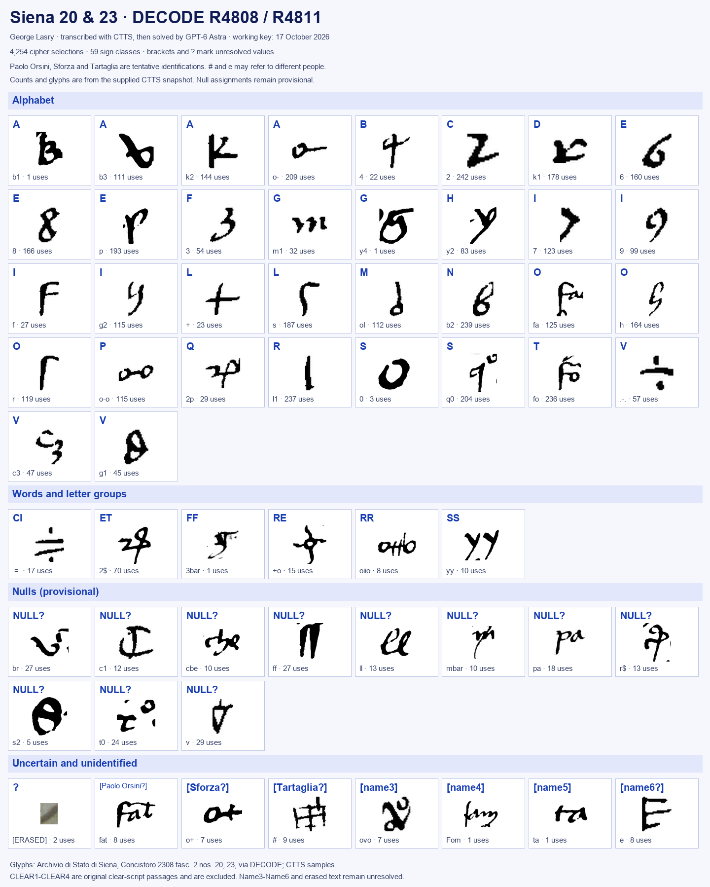

. Wikimedia Commons, public domain.")
At a glanceCiphertext-only break · complete
- The documents
- No. 20: a captain in the King’s pay, most probably Muzio Attendolo Sforza, to King Ladislaus of Naples, Perugia, 30 March 1413. No. 23: two memoranda of the King’s chancery, mid-April 1413, for Iacobo Spinello going to the Marche and Francesco Gattola going to Tartaglia.
- Where
- Archivio di Stato di Siena, Concistoro 2308, fasc. 2 “Lettere in cifra”, nos. 20 and 23; DECODE R4808 and R4811, catalogued “1500–1599” (a placeholder) with no status.
- The cipher
- One key for both sheets, 60 signs: homophones (four for a and i, three for e, o, u), single signs for ci, et, ff, qu, re, rr, ss, eleven nulls and seven name signs.
- How it was deciphered
- George Lasry transcribed no. 23 in CTTS. A detector trained with his ResNet model transcribed no. 20, and he corrected it in CTTS. Claude recovered the key by crib testing and dragging, and Lasry refined it with CTTS. No decipherment and no filed key was available.
- What it says
- The captain announces he will ride against “that traitor” who has taken two hundred of his horses. The King orders the passes of Ascoli and the Tronto held so that Orsini “non possa retornare né ensire indiretro de la Marcha”.
- Still open
- The name signs rendered [Name3], [Name4], [Name5] and ?, the place [Eucebio?], one stretch and the subscription of no. 20. [Paolo Orsini?], [Sforza?] and [Tartaglia?] remain hypotheses.
- Credit
- George Lasry, with CTTS and Claude, 15–17 October 2026, as stated in his report of 17 October 2026. The editions, translations, visual key and five-line check below were first filed through pull request #41, which said “transcribed with CTTS, then solved by GPT-6 Astra”. That material is kept as filed, and the difference is put to him.
A third piece of the same spring, a letter from Naples of 10 March 1413 offering Sforza a royal bride, uses a different cipher and has its own page.
01 The documents and working key
Archivio di Stato di Siena, Concistoro 2308 fasc. 2 nos. 20 and 23, DECODE R4808/R4811. George Lasry’s report of 17 October 2026 says: no. 23 transcribed by him in CTTS, no. 20 by his ResNet detector corrected in CTTS, the key recovered by Claude via crib testing and dragging and refined in CTTS. Pull request #41 had said “transcribed with CTTS, then solved by GPT-6 Astra”. The original recovery used ciphertext patterns and cleartext framing; no interlinear decipherment or matching archive key was available.
The current snapshot contains 4,254 cipher elements in two documents (1,045 + 3,209), with 59 observed classes: 34 alphabetic signs, six word/letter-group signs, seven uncertain references, eleven provisional null classes, and one erased class. The 98.94% assignment coverage measures recognized values, not complete readable prose. Names and editorial gaps remain.


02 Five lines of mechanical decryption
No. 23, complete CTTS physical lines 6–10: 322 signs produce 328 letters. Nulls are omitted; V stands for u/v. No letters are corrected or added. The first and last words continue outside the excerpt. The joined output matches the normalized readable edition exactly.
LMENTECEVADAETPIGLIELIPASSIDASCVLIETFACCIABENGVARDARELIPASSIDELT RONTOETDEARQVATAETDELMONTEDELMONACOETDELALTRILOCHICONVICINICHEPARENOALV IETCHEFACCIAFAMAETNOMINATACHEIPSOEANDATOALIDICTIPASSIETLOCHIPERDV BIOCHELEGENTICHESONELAMARCHANONPOTESSEROENSIREETVENIREETFAREDA MPNOALEDICTETERREETALTRILOCHIDELREETPERFAREFORNIRELOLAVORODELTRONT
03 No. 23 (R4811): the two memoranda
Current edited Italian reading supplied by George Lasry. Physical line breaks joined; uncertainty marks and original clear-script passages retained.
English translation
Revised to match the current Italian edition; uncertain identities remain bracketed.
04 No. 20 (R4808): the Perugia letter
Current edited Italian reading supplied by George Lasry. Physical line breaks joined; uncertainty marks and original clear-script passages retained.
English translation
Revised to match the current Italian edition; uncertain identities remain bracketed.
05 Summary and historical background
Two documents, one cipher; proposed spring 1413 setting. Siena Concistoro 2308, fasc. 2, no. 20 (DECODE R4808) is a captain’s complaint addressed to a king from Perugia on 30 March, without a written year. No. 23 (R4811) contains two royal memoranda for Iacobo Spinelo and Francisco Gactule. Its 4 May date is an arrival deadline, not an issue date. The best current historical hypothesis is Ladislaus of Naples’s campaign of spring 1413, with the memoranda probably written before 4 May. The year and correspondents remain inferred.
Contents. The letter’s writer says an enemy has taken fully 200 horses and threatens retaliation despite the risk of royal punishment, while promising not to harm the Church’s lands, people or livestock. The first memorandum coordinates the guarding of passes near Ascoli, the Tronto, Arquata and Montemonaco to contain a hostile captain in the Marche, with intelligence gathering and limited, secret cooperation with the Malatesta. It also orders the recovery of castles using 140 lances. The second arranges a royal muster at “Maccione de le Rose”, a payment of 1,000 ducats, and a promise under seal.
Why 1413. The Fermo chronicle describes an unusually close parallel in April 1413: forces at Forca di Presta and Sforza’s troops around Caldarola and Sarnano were placed to prevent Paolo Orsini from leaving the Marche at the King of Naples’s request. Orsini’s departure and pursuit are recorded on 10 May. This supports the campaign setting and fat = [Paolo Orsini?], but supplies no verbatim decipherment. [Cronache della città di Fermo, printed pp. 39–40]
Probable participants. Minuti recounts Sforza’s grievance against Orsini, his service to Ladislaus, and his return to Perugia in February 1413 before pursuing Orsini in the Marche. This makes Muzio Attendolo Sforza a plausible writer of no. 20, although its subscription remains unread. Rodolfo is probably Rodolfo III da Varano; “messer Ludovico” probably Ludovico Migliorati. These contextual proposals do not replace the names actually recovered. [Minuti, Vita di Muzzo Attendolo Sforza, pp. 163–169]
Key comparison and dating safeguard. Meister’s printed Viviani nomenclator, dated 25 July 1412, has a circle-and-cross Sforza sign comparable to o+. This supports [Sforza?]; the Lucca alphabets differ, so they are not the recovered key. Meister’s 1421 date belongs explicitly to Siena piece no. 1, not nos. 20 or 23. The local “Siena1421” name therefore cannot date this pair. [Meister, Die Anfänge der modernen diplomatischen Geheimschrift (1902), pp. 51, 55–57]
Place and remaining limits. “Maccione de le Rose” probably denotes the Mazzone delle Rose muster ground. Later royal records independently attest a camp there, including near Ponte Annecchino in 1450; they support the place identification, not the date of these letters. [I registri privilegiorum di Alfonso il Magnanimo, register 2905, nos. 11–16; register 2914, no. 27]
The supplied research report surveys 44 key records, 43 with images, and reports no matching key; R4783 could not be inspected (it has no image on DECODE, confirmed 18 October 2026). It also reports no external copy of these plaintexts. These are bounded search results. The heading certainly names Tartaglia, but # = [Tartaglia?] remains tentative: # and the repeated e = [Name6?] may name different people. Name3–Name6, the place [Eucebio?], one difficult clause and the subscription remain unresolved. No priority or “oldest deciphered cipher” claim is made.
06 Method and limits
The complete editions are edited readings, not full mechanical decodings. Only the five lines above were mechanically verified. The unresolved dessut clause, [essereme?], [Eucebio?], [prout?], erasures, closing and subscription remain explicit. No new identity is treated as established. The seven reference signs occupy 41 positions; all remain open at the identity level.
George Lasry supplied and reviewed the CTTS material and directed recovery with GPT-6 Astra. Codex prepared this contribution, updated the translations, verified the five-line excerpt, and checked selected sources from the supplied historical report. A selected-excerpt statistical result does not validate every edited word or the full key.
07 George Lasry’s report of 17 October 2026
On 17 October 2026 George Lasry sent a consolidated report on all the cipher pieces of Concistoro 2308 fasc. 2, grouped by key. Its section on nos. 20 and 23 is filed verbatim in the repository (targets/siena2023/lasry_report.md). It states that both sheets are deciphered in full: about 4,260 symbols, one key with a nomenclator. It dates no. 20 to 30 March 1413 and no. 23 to mid-April 1413, from the contents and the Fermo chronicle’s record of the cordon round Orsini about 16 April. Its readings agree with the editions above in the passages compared; where the editions write [Name6?], the report writes ?.

Full texts
The transcription and the decryption of every document on this page, so that the reading can be used and checked. Short files are shown here; all are in the repository.
No. 20 (R4808), [Muzio Attendolo Sforza?] to King Ladislaus, Perugia, 30 March [1413] (George Lasry)
A captain in the king's pay, most probably Muzio Attendolo Sforza, to King Ladislaus of Naples, Perugia, 30 March 1413: an enemy, 'quel traditore de [Paolo Orsini?]', has taken fully 200 horses, and the writer threatens retaliation despite the risk of royal punishment, while promising not to harm the Church's lands, people or livestock. Decryption and translation are George Lasry's (PR #41 edition and his report of 17 Oct 2026); project_attempt/no20.txt is this project's independent 24 Sept transcription, on which his reading was checked.
Transcription
# 4808.jpg CLEAR2;q0;p;2;c3;b2;k1;h; +o;o-o;h;t0;s2;8;fo;k1;6;ff;q0;b3;ll;o-o;6;v;l1;8;6;fo;q0;t0;p;2;.-.;b2;k1;r;mbar;o-o;7;c3;g1;br;s;fo;6;.-.;r;q0;2;l1;7;o-o;fo;h;2p;g1;p;s;fo;l1;k2;k1;9;fo;fa;l1;p;k1;6;fat;o-o;6;l1; 3;9;b2;oI;fa;q0;6;oI;o-o;l1;6;q0;p;g2;b2;m1;6;m1;b2;f;o-;fo;fa;c3;h;s;6;l1;8;k1;7;q0;3;k2;l1;6;oI;p;8;fo;s;6;g1;o-;l1;oI;p;s;8;oI;6;f;fo;6;oiio;p;6;s;k2;oI;7;o-;2;h;oI;o-o;b3;m1;b2;f;o-;2$; o-o;6;l1;3;g2;b2;oI;r;oI;p;y2;k2;fo;h;s;fo;ll;g2;4;6;b2;k1;h;2;8;b2;fo;fa;2;o-;ll;v;.-.;b3;+;g2;p;fo;oI;.-.;s;fo;8;c3;fa;s;fo;ff;p;b2;6;y2;r;3;k2;2;fo;o-;2p;.-.;p;l1;7;oI;r;b2;9;o-;b3;+;o-; +o;2$;y2;k2;.-.;6;fo;p;oI;8;q0;6;oI;o-o;l1;8;2;r;b2;3;h;l1;fo;k2;fo;fa;2$;o-o;l1;r;oI;g2;yy;fa;k1;6;h;o-o;8;l1;o-;v;ll;l1;8;2;h;b2;b2;r;q0;fo;l1;fa;q0;6;m1;b2;h;l1;8;2;y2;p;2p;g1;8;q0; fo;8;2;fa;q0;p;2;6;yy;k2;l1;o-;b2;k1;r;2$;oI;o-;f;b2;h;b2;k1;6;yy;c3;fo;fat;3;o-;2;fo;r;b2;g2;p;b2;v;fo;p;o-;b2;.=.;7;9;s;k1;g2;2;fo;r;fo;l1;o-;k1;ll;g2;fo;fa;l1;8;k1;o-;ff;mbar;k1;7;g2;b2;k1;9; q0;6;oI;o-o;l1;p;y2;o-;3;k2;2;fo;h;o-o;6;7;r;q0;9;2;ff;br;2;y2;p;.-.;8;m1;6;b2;k1;h;s;c3;f;p;f;r;yy;6;l1;p;oI;8;2;o-;o-o;7;fo;b3;s;g2;b2;7;oI;9;2;r;oI;6;y2;fa;k1;p;s;7;4;6;l1;k2;fo;h;q0;6;g2;fa;3;r; yy;p;2;6;l1;fo;h;2;y2;8;s;o-;+o;oI;6;3;b3;2;p;yy;8;fo;o-;m1;s;f;k2;l1;8;s;o-;fo;6;q0;fo;o-;k1;p;3;k2;l1;8;o-;+;c3;f;7;g1;0;fo;b3;s;fa;oI;g2;h;o-o;r;fo;6;l1;8;2p;g1;p;+;fa;2;y2;8;s;.-.;f; y2;o-;g1;r;s;.-.;fo;h;3;o-;l1;8;b3;oI;pa;g2;2$;b2;r;fo;7;3;9;2;h;.-.;p;2;y2;p;2;l1;o-;f;b3;+;g1;s;fo;g2;oI;h;k1;6;s;o-o;l1;8;q0;6;b2;fo;p;oI;7;o-o;o-;l1;fo;6;l1;h;k1;o-;2p;.-.;6;q0;fo;b3;fo;8;oiio;o-; 6;fo;k2;b2;k1;7;l1;fa;o-;k1;fo;l1;h;.-.;o-;ll;v;l1;p;2p;c3;8;+;r;ff;s2;fo;v;l1;o-;k1;9;fo;h;l1;8;2$;3;b3;l1;r;2;fa;b2;fo;mbar;l1;o-;k1;f;s;g1;f;2;7;fa;pa;s2;2;y2;6;o-o;h;fo;v;l1;h;q0;p;oI;g2; k1;7;.-.;8;yy;6;oI;p;2;fo;p;l1;8;o-;o-o;p;l1;7;2;h;s;r;q0;fa;o-o;o-;l1;fo;g2;mbar;s2;br;fo;[ERASED];[ERASED];o-o;6;l1;h;2;y2;8;.-.;b2;o-;3;7;o-;fo;k2;b2;b3;b2;fo;ff;ll;g2;.-.;h;+;r;g1;6;k1;8;l1;p;o-o;6;l1;k1;p; l1;p;oI;6;9;r;mbar;s;o-;l1;h;4;o-;oI;7;k2;2;y2;p;8;yy;6;l1;oI;f;fo;r;s;fo;o-;h;oI;b2;p;k1;9;o-;2p;c3;6;q0;fo;r;oI;h;k1;fa;k1;6;.-.;b2;o-;2;fa;q0;k2;.-.;6;2;p;l1;fo;7;3;9;2;fa;2$;o-;g1;7;q0;h; 2;y2;6;o-;fo;p;oiio;k2;2$;y2;h;oI;7;b2;9;k1;6;p;2;mbar;br;cbe;2;y2;6;q0;o-;b2;7;g2;b2;o-o;p;l1;q0;h;b2;8;b2;9;7;b2;4;8;q0;fo;7;o-;oI;p;3;o-;l1;r;b2;h;.-.;9;fo;o-;ll;ff;fo;p;g1;8;l1;c3;b2;b3;oI;k2; k1;o-;oI;7;b3;s;.-.;f;oI;9;y2;k2;f;b3;fo;6;o-o;p;l1;8;0;2;.-.;q0;o-;fo;h;2;y2;8;q0;h;b2;k1;g2;q0;o-o;r;q0;fo;fa;3;o-;l1;p;s;h;o-o;8;7;h;2;y2;8;o-o;r;fo;mbar;v;l1;r;o-o;6;l1;h;2;y2;p;2;r;oI;fa; 2p;g1;o-;b2;k1;r;f;fa;6;l1;k2;g2;b2;2p;.-.;p;+;fa;k1;p;8;.-.;2;8;4;9;r;s;.-.;f;q0;6;o-o;o-;l1;fo;9;h;2;h;s;o-;q0;r;b3;2;r;oI;o-o;o-;m1;b2;f;k2;o-o;6;l1;oI;9;.-.;h;s;p;l1;fo;br;cbe;l1;h;c3;o-;l1;6; q0;p;mbar;2;c3;b2;k1;h;s;o-;v;mbar;+o;8;fo;pa;ll;ff;fo;c3;2;mbar;fo;r;s;h;oI;r;b2;k1;fa;q0;k2;CLEAR4;
Transcription
g:q0 g:p g:2 g:c3 g:b2 g:k1 g:h g:+o g:o-o g:h g:t0 g:s2 g:8 g:fo g:k1 g:6 g:ff g:q0 g:b3 g:ll g:o-o g:6 g:v g:l1 g:8 g:6 g:fo g:q0 g:t0 g:p g:2 g:.-. g:b2 g:k1 g:r g:mbar g:o-o g:7 g:c3 g:g1 g:br g:s g:fo g:6 g:.-. g:r g:q0 g:2 g:l1 g:7 g:o-o g:fo g:h g:2p g:g1 g:p g:s g:fo g:l1 g:k2 g:k1 g:9 g:fo g:fa g:l1 g:p g:k1 g:6 g:fat g:o-o g:6 g:l1 g:3 g:9 g:b2 g:oI g:fa g:q0 g:6 g:oI g:o-o g:l1 g:6 g:q0 g:p g:g2 g:b2 g:m1 g:6 g:m1 g:b2 g:f g:o- g:fo g:fa g:c3 g:h g:s g:6 g:l1 g:8 g:k1 g:7 g:q0 g:3 g:k2 g:l1 g:6 g:oI g:p g:8 g:fo g:s g:6 g:g1 g:o- g:l1 g:oI g:p g:s g:8 g:oI g:6 g:f g:fo g:6 g:oiio g:p g:6 g:s g:k2 g:oI g:7 g:o- g:2 g:h g:oI g:o-o g:b3 g:m1 g:b2 g:f g:o- g:2$ g:o-o g:6 g:l1 g:3 g:g2 g:b2 g:oI g:r g:oI g:p g:y2 g:k2 g:fo g:h g:s g:fo g:ll g:g2 g:4 g:6 g:b2 g:k1 g:h g:2 g:8 g:b2 g:fo g:fa g:2 g:o- g:ll g:v g:.-. g:b3 g:+ g:g2 g:p g:fo g:oI g:.-. g:s g:fo g:8 g:c3 g:fa g:s g:fo g:ff g:p g:b2 g:6 g:y2 g:r g:3 g:k2 g:2 g:fo g:o- g:2p g:.-. g:p g:l1 g:7 g:oI g:r g:b2 g:9 g:o- g:b3 g:+ g:o- g:+o g:2$ g:y2 g:k2 g:.-. g:6 g:fo g:p g:oI g:8 g:q0 g:6 g:oI g:o-o g:l1 g:8 g:2 g:r g:b2 g:3 g:h g:l1 g:fo g:k2 g:fo g:fa g:2$ g:o-o g:l1 g:r g:oI g:g2 g:yy g:fa g:k1 g:6 g:h g:o-o g:8 g:l1 g:o- g:v g:ll g:l1 g:8 g:2 g:h g:b2 g:b2 g:r g:q0 g:fo g:l1 g:fa g:q0 g:6 g:m1 g:b2 g:h g:l1 g:8 g:2 g:y2 g:p g:2p g:g1 g:8 g:q0 g:fo g:8 g:2 g:fa g:q0 g:p g:2 g:6 g:yy g:k2 g:l1 g:o- g:b2 g:k1 g:r g:2$ g:oI g:o- g:f g:b2 g:h g:b2 g:k1 g:6 g:yy g:c3 g:fo g:fat g:3 g:o- g:2 g:fo g:r g:b2 g:g2 g:p g:b2 g:v g:fo g:p g:o- g:b2 g:.=. g:7 g:9 g:s g:k1 g:g2 g:2 g:fo g:r g:fo g:l1 g:o- g:k1 g:ll g:g2 g:fo g:fa g:l1 g:8 g:k1 g:o- g:ff g:mbar g:k1 g:7 g:g2 g:b2 g:k1 g:9 g:q0 g:6 g:oI g:o-o g:l1 g:p g:y2 g:o- g:3 g:k2 g:2 g:fo g:h g:o-o g:6 g:7 g:r g:q0 g:9 g:2 g:ff g:br g:2 g:y2 g:p g:.-. g:8 g:m1 g:6 g:b2 g:k1 g:h g:s g:c3 g:f g:p g:f g:r g:yy g:6 g:l1 g:p g:oI g:8 g:2 g:o- g:o-o g:7 g:fo g:b3 g:s g:g2 g:b2 g:7 g:oI g:9 g:2 g:r g:oI g:6 g:y2 g:fa g:k1 g:p g:s g:7 g:4 g:6 g:l1 g:k2 g:fo g:h g:q0 g:6 g:g2 g:fa g:3 g:r g:yy g:p g:2 g:6 g:l1 g:fo g:h g:2 g:y2 g:8 g:s g:o- g:+o g:oI g:6 g:3 g:b3 g:2 g:p g:yy g:8 g:fo g:o- g:m1 g:s g:f g:k2 g:l1 g:8 g:s g:o- g:fo g:6 g:q0 g:fo g:o- g:k1 g:p g:3 g:k2 g:l1 g:8 g:o- g:+ g:c3 g:f g:7 g:g1 g:0 g:fo g:b3 g:s g:fa g:oI g:g2 g:h g:o-o g:r g:fo g:6 g:l1 g:8 g:2p g:g1 g:p g:+ g:fa g:2 g:y2 g:8 g:s g:.-. g:f g:y2 g:o- g:g1 g:r g:s g:.-. g:fo g:h g:3 g:o- g:l1 g:8 g:b3 g:oI g:pa g:g2 g:2$ g:b2 g:r g:fo g:7 g:3 g:9 g:2 g:h g:.-. g:p g:2 g:y2 g:p g:2 g:l1 g:o- g:f g:b3 g:+ g:g1 g:s g:fo g:g2 g:oI g:h g:k1 g:6 g:s g:o-o g:l1 g:8 g:q0 g:6 g:b2 g:fo g:p g:oI g:7 g:o-o g:o- g:l1 g:fo g:6 g:l1 g:h g:k1 g:o- g:2p g:.-. g:6 g:q0 g:fo g:b3 g:fo g:8 g:oiio g:o- g:6 g:fo g:k2 g:b2 g:k1 g:7 g:l1 g:fa g:o- g:k1 g:fo g:l1 g:h g:.-. g:o- g:ll g:v g:l1 g:p g:2p g:c3 g:8 g:+ g:r g:ff g:s2 g:fo g:v g:l1 g:o- g:k1 g:9 g:fo g:h g:l1 g:8 g:2$ g:3 g:b3 g:l1 g:r g:2 g:fa g:b2 g:fo g:mbar g:l1 g:o- g:k1 g:f g:s g:g1 g:f g:2 g:7 g:fa g:pa g:s2 g:2 g:y2 g:6 g:o-o g:h g:fo g:v g:l1 g:h g:q0 g:p g:oI g:g2 g:k1 g:7 g:.-. g:8 g:yy g:6 g:oI g:p g:2 g:fo g:p g:l1 g:8 g:o- g:o-o g:p g:l1 g:7 g:2 g:h g:s g:r g:q0 g:fa g:o-o g:o- g:l1 g:fo g:g2 g:mbar g:s2 g:br g:fo g:[ERASED] g:[ERASED] g:o-o g:6 g:l1 g:h g:2 g:y2 g:8 g:.-. g:b2 g:o- g:3 g:7 g:o- g:fo g:k2 g:b2 g:b3 g:b2 g:fo g:ff g:ll g:g2 g:.-. g:h g:+ g:r g:g1 g:6 g:k1 g:8 g:l1 g:p g:o-o g:6 g:l1 g:k1 g:p g:l1 g:p g:oI g:6 g:9 g:r g:mbar g:s g:o- g:l1 g:h g:4 g:o- g:oI g:7 g:k2 g:2 g:y2 g:p g:8 g:yy g:6 g:l1 g:oI g:f g:fo g:r g:s g:fo g:o- g:h g:oI g:b2 g:p g:k1 g:9 g:o- g:2p g:c3 g:6 g:q0 g:fo g:r g:oI g:h g:k1 g:fa g:k1 g:6 g:.-. g:b2 g:o- g:2 g:fa g:q0 g:k2 g:.-. g:6 g:2 g:p g:l1 g:fo g:7 g:3 g:9 g:2 g:fa g:2$ g:o- g:g1 g:7 g:q0 g:h g:2 g:y2 g:6 g:o- g:fo g:p g:oiio g:k2 g:2$ g:y2 g:h g:oI g:7 g:b2 g:9 g:k1 g:6 g:p g:2 g:mbar g:br g:cbe g:2 g:y2 g:6 g:q0 g:o- g:b2 g:7 g:g2 g:b2 g:o-o g:p g:l1 g:q0 g:h g:b2 g:8 g:b2 g:9 g:7 g:b2 g:4 g:8 g:q0 g:fo g:7 g:o- g:oI g:p g:3 g:o- g:l1 g:r g:b2 g:h g:.-. g:9 g:fo g:o- g:ll g:ff g:fo g:p g:g1 g:8 g:l1 g:c3 g:b2 g:b3 g:oI g:k2 g:k1 g:o- g:oI g:7 g:b3 g:s g:.-. g:f g:oI g:9 g:y2 g:k2 g:f g:b3 g:fo g:6 g:o-o g:p g:l1 g:8 g:0 g:2 g:.-. g:q0 g:o- g:fo g:h g:2 g:y2 g:8 g:q0 g:h g:b2 g:k1 g:g2 g:q0 g:o-o g:r g:q0 g:fo g:fa g:3 g:o- g:l1 g:p g:s g:h g:o-o g:8 g:7 g:h g:2 g:y2 g:8 g:o-o g:r g:fo g:mbar g:v g:l1 g:r g:o-o g:6 g:l1 g:h g:2 g:y2 g:p g:2 g:r g:oI g:fa g:2p g:g1 g:o- g:b2 g:k1 g:r g:f g:fa g:6 g:l1 g:k2 g:g2 g:b2 g:2p g:.-. g:p g:+ g:fa g:k1 g:p g:8 g:.-. g:2 g:8 g:4 g:9 g:r g:s g:.-. g:f g:q0 g:6 g:o-o g:o- g:l1 g:fo g:9 g:h g:2 g:h g:s g:o- g:q0 g:r g:b3 g:2 g:r g:oI g:o-o g:o- g:m1 g:b2 g:f g:k2 g:o-o g:6 g:l1 g:oI g:9 g:.-. g:h g:s g:p g:l1 g:fo g:br g:cbe g:l1 g:h g:c3 g:o- g:l1 g:6 g:q0 g:p g:mbar g:2 g:c3 g:b2 g:k1 g:h g:s g:o- g:v g:mbar g:+o g:8 g:fo g:pa g:ll g:ff g:fo g:c3 g:2 g:mbar g:fo g:r g:s g:h g:oI g:r g:b2 g:k1 g:fa g:q0 g:k2
Transcription
No. 20 (ASSi Concistoro 2308, fasc. 2, no. 20) - DECODE R4808
Image: decode/img/IMG_R4808_I27971_P.jpg (4000x2248), single side, landscape slip; pencil "20" at lower right.
Transcriber: agent C, 24 Sept 2026, from the photograph (4x LANCZOS crops of 420-px windows along each manuscript
line, doubtful signs re-checked at 5-8x; crops in crops/agentC/w<line>_<win>.jpg, z*.jpg, v*.jpg, c*.jpg).
Line centres were taken from a row-darkness profile at x = 600..3400 and interpolated (the lines slope up
to the right by about 20 px).
WHAT IT IS
- 17 written lines. m.00 = clear salutation + 7 cipher signs; m.01-m.14 = continuous cipher, full width;
m.15 = 41 cipher signs, then the clear dating clause on the same line; m.16 = one clear word at the left margin.
- No interlinear glosses, no deletions noticed, no word separators, no dots between groups.
CLEAR TEXT (as read; abbreviations expanded in round brackets)
- Opening (m.00): "Sacra Regia Maie(sta)s(?) Serenissime princeps ac metuendissime d(omi)ne an(te?) terre pedu(m)
oscula," - "Maie" carries a superscript "tas"/"tts" and a following s-like mark (Maiestas); "dne" has a
macron. NOTE: the word before "terre" reads "an" with a long overstroke (an(te)?), NOT "post" as in the brief;
one letter-form, but "a" + "n" are clear. A comma/virgula follows "oscula", then the cipher begins.
- Closing (m.15, after the cipher): "Scriptum(?) Perusii(?) die penultimo mensis Martii" + one further word at the
line end, unread (a capital like S/B + "r" + a looped final with a long descender; possibly an abbreviation of
the year or of the subscription). "Scriptum": S + c + a-like letter + u/r + p with a stroke through the descender
(Scriptu(m)/Scripta?). "Perusii": p + r-shaped (per-?) + u + long s + y = P(er)usy = Perusii (Perugia),
reading fairly likely. "die penultimo mensis Martii" certain ("Marty" with a y-ending).
- m.16, left margin under the first cipher signs of m.15: "Ind" with a looped I and a crossed/abbreviated d
(Ind(ictione)? or start of a subscription), nothing else on that line.
SIGN LEGEND (names used in the transcription; "^x" = superscript x written ABOVE the preceding sign)
Letter-like signs
a a (closed bowl, short tail); almost always in "f a" (27 of 37)
b b: tall ascender (often looped) with a closed bowl at the foot. Distinguished from 6 by the tall ascender
c small c, open to the right
d d with an upright or looped ascender over a bowl (ꝺ-like); in some places the ascender carries a small
loop at the top, which makes it resemble q^o (checked where noted)
DU uncial d / delta: round bowl whose ascender curls back LEFT over it (∂/δ) (m.02, m.10). May be the same
sign as d; kept separate
e loop e (m.14 "h e", m.15 "p a e l"); rare
g g-like: closed bowl with descender curling back left (m.02 "g h", m.03 "o o g l"); m.15 "g?" is a larger
curly sign after h^'
h h: tall stem (often looped) + arch whose right leg descends below the line and hooks left (ɦ)
h^' h whose ascender ends in a separate flag/tick to the right (m.11, m.15 x2); may be a pen variant of h
i short minim with a tick above (i) - 3x, uncertain as a separate sign
k R/k-like sign: upright with a loop at the top and a leg kicked out to the right (like ꝁ or an R); 18x
l plain tall upright, sometimes with a foot turning right; very frequent (81)
LAM λ-like sign: long stroke from upper right down to the left with a short leg (ʎ/λ) (m.12 end, m.13)
LX looped l crossed by a horizontal bar (ƚ/ℓ with bar), 1x (m.01 end)
m m (3 minims) - 7x
n n - 1x (m.11, uncertain)
o round o, baseline size. Very frequent (129); often doubled "o o"
p p with straight descender; often in "z p" (the z's tail running into the p)
q q: bowl with straight descender, no superscript (3x)
q^o q with a small o written above it (in "q^o", the o is sometimes joined to the top of the stem so the sign
looks like a looped-top q). 13x; frequently after "f a" ("f a q^o k" m.11, m.15)
q^v q with a small v/u above (5x)
r r (short stem with shoulder) incl. the 2-shaped/round r-form where it sits on the line
r^. / r^v r with a dot above / with a small v above
S LONG s / tall descending stroke with a top hook (ſ); ALL tall s-forms written S (round s was not seen)
t t (short cross-stroke) - 7x ("o t t o" twice: m.02, m.08)
v v/u-shaped sign (open, pointed base)
v^r v with a small r above (m.12)
x slanted cross (saltire) standing on the line, 1x (m.01 "f o x r 6")
y y: two short strokes with a long descender to the lower left (sometimes 4-like, ɥ)
y^v y with small v above (m.12)
z 2/z-shaped sign (z, looks like a figure 2); counted as ONE sign whether the scribe wrote it 2- or z-like
z^' z with a tick above (m.11)
Digit-like signs
3 3/ʒ-shaped sign with a descender (a c-top above a 3); 21x
4 4 (4x)
5 5 (3x)
6 6: small bowl with a short ascender (no loop), distinct from b by height
7 7 with a long descender slanting left
8 8 (63x)
9 9 with a curved tail; 9^o = 9 with small o above (6x)
Other signs
AINV inverted triangle with an ascender from its right corner (∇ with stem, like a triangular d), 8x
CROSSO round bowl/ring with an upright crossed by a bar (♁/đ-like); the first sign of m.01 is a large ornate
version with long curving arms. 4x
DIV ÷ : horizontal bar with a dot above and below (25x). Often preceded by "o" or "h"
PLUS + upright cross on the line (7x)
Superscripts found
o^n the very frequent "f o^n" group: f + baseline o + a small n / tilde-like hook written over the o
(56x). The superscript sits over the o, not over the f; recorded as f o^n (i.e. the brief's "fô").
o^' o with a tick above (m.03, m.07 "f o^'")
o^r o with small r above (m.08)
h^o h with small o above (m.11 end)
d^r d with small r above (m.01)
TRANSCRIPTION (m.NN = manuscript line; tokens = one sign each, superscripts attached; "?" = uncertain reading
of that sign, "??" = illegible; no visible gaps between groups were found, so no " / " marks)
m.00 clear: Sacra Regia Maie(sta)s(?) Serenissime princeps ac metuendissime d(omi)ne an(te?) terre pedu(m) oscula,
then cipher at end of line:
m.00 q^o p z c b r h
m.01 CROSSO o o h r^. 8 8 f o x r 6 S S q^o v l l o o 6 AINV l 8 6 f o^n q^v r^v p z DIV b r S h b? o 7 5 8 d^r S S f o^n v DIV S 9^o z l 7 o o f o^n h z 8 r S f o^n i v? r^. 9 f o^n f a l p r 6 f a LX a? o 6 l
m.02 3 9 b d f a q^o 6 o o o l 6 q^o p y b m c m b f o f o f a g h S 6 l 8 r 7 9^o z r l 6 d p 9 f o^n S 6 DU o l l 6 p S 8 6 6 f f o^n 6 o t t o p 6 S i z 6 7 o o z h d o o v m b f o z p
m.03 o o g l 3 y? b d S o^' p y i z f o^n h S f o^n l l y 4 6 b r h z 8 b f o^n f a z o l l AINV DIV v PLUS y p f o^n d DIV S f o^n? 8 3 f a S? f o^n S S p b 6 y S 3 k z f o^n o z p DIV p l 7 d S b 9 o v t o
m.04 CROSSO z p y k DIV 6 f o p d 8 q^o 6 d o o l 8 z S b 3 h l f o^n k f o^n f a z 8 o o l S b y y y f a r 6 h o o 8 l o AINV l l l? 8 z h b b S 9^o f o^n l f a q^o b m b h l 8 z y p z p 8 8 q^o
m.05 f o^n 8 z f a S p z 6 y y k l o b r S z 8 b o f b h b r 6 y y 3 f o^n f a 3 o z f o^n b y p b AINV f o^n p o b DIV 7 9 S r y z f o^n S f o^n l o r l l y f o^n f a l 8 r o S S h r y y b r h?
m.06 q^v 6 d o o l p y o 3 k z f o^n h o o 6 7 f l? o z S S 5 z y p DIV 8 m 6 b r h S 3 f p ?? S y y 6 l p d 8 z o o o 7 f o v S y b 7 d 9 z S o 6 y f a r p S 7 4 6 l k f o h q^o 6 y f a z S
m.07 y y p z 6 l f o^' h z y 8 S o CROSSO b 6 3 v z p y y 8 f o^n o m S f k l 8 S o f o 6 q f o r p 3 k l 8 o PLUS 3 f 7 8 o f o b S f a d y h o v S f o^n 6 l 8 z p 8 p PLUS f a z y 8 f DIV f
m.08 y o 8 S S DIV f o^n? h 3 o l 8 v d p a y z 8? b S f o^n 7 3 9 z h DIV p z y p z l a f o PLUS 8 S f o y d h r 6 S o^r a l 8 q^o 6 b f o^n p d 7 o o o l f o^n 6 l h r o z p DIV 6 9^o f o^n? v f o 8 o t t o
m.09 6 f o^n k b r y l f a o r f o^n l h DIV o AINV l p z p 5 8 PLUS S S 8 f o AINV l o r 9 f o^n t 8? z 8 3 v l S z f a b f o^n h l o r f S 8 f z 7 f a p a 8 z y 6 o o b f o^n AINV l h q^v p d y
m.10 r 7 DIV 8 y y 6 d p z f o^n p l 8 o o o p l 7 z h S S q^o f a o v a l f o^n y h 8 z o f o^n o 6 l h z y 8 DIV b o 3 7 o f o^n k b v b f o^n S S l l y DIV h PLUS S DU 6 r 8 l p o c 6 l r p
m.11 l p d c 9 S h^' S o l h q o 6 7 k z y p 8 y y 6 l 6 f f o^n S S f o^n d o h 6 b p r 9 o z p c 6 q^v f o^n S d h z^' f n? r 6 DIV b o z f a l q^o k DIV 6 z p l f o^n 7 3 9 z f a z 8 v 8 7 9 h^o
m.12 z y v o f o^n p a t o k 8 y h 6 7 b 9 r 6 p z h v^r c k z y 6 9^o o 8 7 y b o o p l y^v h b 8 b 9 7 6 4 8 9 f o^n 7 o d p 3 o l S 6 h DIV 9 f o^n o l l S S f o^n p 8 8 l 3 6 v d LAM
m.13 r o 6 7 LAM S DIV f d 9 y k f v f o^n v o o p l 8 o z DIV q^o a f o^n h z y 8 9 h b r y 9^o o o S q^v f o^n f a z o l p S h o o 8 7 h z y 8 o o S f o^n h AINV l S o v d l h z y p z S d f a
m.14 z o d o b r S f f a c l k y b z p DIV p PLUS f a r p 8 DIV z 8 4 9 l S DIV f 9 6 o o d l f o^n 9 h z h S o d S v z S d o v o m? b f k o o 6 l d? 9 DIV h S p l f o^n v S? o h e? l h c a l 6
m.15 q p h^' z 3 b r h S o CROSSO h^' g? h 8 f o p a e l S S f o 3 z h f o S S h b S b r f a q^o k
m.15 clear (same line, after the cipher): Scriptum(?) Perusii(?) die penultimo mensis Martii ??
m.16 clear (left margin, below): Ind(?)
COUNTS (cipher signs only, m.00-m.15; computed from the lines above)
- total cipher tokens: 1231 (19 marked uncertain, 1 illegible); 51 distinct names
- per name: o 129, f 118, S 82, l 81, z 71, p 63, 8 63, 6 61, y 59, o^n 56, h 53, b 51, r 37, a 37, d 30, 7 26, DIV 25, v 23, 9 22, 3 21, k 18, q^o 13, c 8, AINV 8, m 7, t 7, PLUS 7, 9^o 6, q^v 5, CROSSO 4, 4 4, 5 3, i 3, g 3, q 3, h^' 3, r^. 2, DU 2, o^' 2, LAM 2, e 2, x 1, r^v 1, d^r 1, LX 1, ?? 1, o^r 1, z^' 1, n 1, h^o 1, v^r 1, y^v 1
- f is followed by o^n 56x, by plain o 17x, by a 27x (of 118 f)
OBSERVATIONS
- "f" almost never stands alone: f + o^n / f + o / f + a account for ~100 of 118 f. "f o^n" (the brief's "f^o")
is the commonest group (56x, ~3.5 per line) and probably one cipher unit (a code group or a frequent word);
"f a" (27x) and "f o" (17x) are probably separate units. For ciphertext-only work treat "f o^n", "f o", "f a"
as candidate single symbols.
- Superscripts other than the n over "f o" are rare (q^o 13, 9^o 6, q^v 5 and single cases). The superscript o
on q is sometimes joined to the stem.
- Doubled signs are frequent: "o o" (~30x, also "o o o"), "y y", "S S", "l l", "8 8"; "o t t o" twice.
- Likely nulls / separators: DIV (the division sign, 25x) and PLUS (+, 7x) occur mid-line between ordinary signs, often after o
or h and before p/f/S; they may be nulls or word dividers - not demonstrated.
- No visible word gaps; the scribe writes continuously. The first sign of m.01 (CROSSO, large) looks like an
ornamental start mark and could be a null.
- Look-alikes to keep in mind: b vs 6 (height of ascender), d vs q^o (looped top), DU vs d, S (long s) vs f
(f has a cross-bar), z vs r (2-shaped r not separated from z where it sat on the line), 9 vs q (curved vs
straight tail).
- Thin long strokes crossing a line come from descenders of the line above (y, 7, 9, q); they were not
transcribed as signs.
- Clear text: see above; the brief's "post terre pedum oscula" is written "an(te?) terre pedu(m) oscula" here, and
the closing names the place, probably Perugia ("Perusii").Decryption
Sacra Regia Maiestas. Serenissime princeps ac metuendissime domine, ante terre pedum oscula. Secundo Regia Maiestà po’ et dè sapere; et, secundo più volte v'ò scripto, quel traditore de [Paolo Orsini?] perfin mo sempre s'è ingegniato volere disfare me et levarme le mei terre e la mia compagnia; et per fin mo me ha tolti ben docento cavali, et multe volte ne ho facta querimonia a la Regia Maiestà, et havete me sempre confortato et promisso de operare con nostro Segnore che queste cose cessaranno; et mai non ⟨dessut⟩ [Paolo Orsini?] facto niente. Anci il dicto traditore, da dì in dì, sempre ha facto peio; sì che, vegendo lui [essereme?] capital inimico, me ho deliberato, se io fosse certo che la Regia Maiestà me facesse tagliare la testa, de fare a lui iusta lo mio potere quelo che lui ha voluto fare a mi. Et notifico ve che crai, a l'ultimo del presente, mi parterò da questa terra et andirò ad trovare quelo traditore, et farò contra di lui ciò che potrò, se mi dovesse mectere a pericoloso partito; però che una fiata nanti volo vedere perdereme io la roba mia che esser mi tolta omne dì a questo modo. De una cosa ve certifico et aviso: che a terra et homini de Ecclesia, ni in persone ni in bestiame, farò novitate veruna; ma da mi a lui mi haiate per escusato, ché son disposto fare lo peio che potrò; però che, como quando io era in quelo de [Eucebio?], lui se partìo co la soa compagnia per mi voler trovare, secundo la Regia Maiestà et tucto lo mondo sa. Scriptum Perusii die penultimo mensis Martii ⟨abbr.⟩. [Abbreviated subscription unread.]
Decryption
1|Sacra Regia Maiestas. Serenissime princeps ac metuendissime domine, ante terre pedum oscula. Secundo 2|Regia Maiestà po’ et dè sapere; et, secundo più volte v'ò scripto, quel traditore de [Paolo Orsini?] per- 3|fin mo sempre s'è ingegniato volere disfare me et levarme le mei terre e la mia compagnia; et 4|per fin mo me ha tolti ben docento cavali, et multe volte ne ho facta querimonia a la 5|Regia Maiestà, et havete me sempre confortato et promisso de operare con nostro Segnore che ques- 6|te cose cessaranno; et mai non ⟨dessut⟩ [Paolo Orsini?] facto niente. Anci il dicto traditore, da dì in dì, 7|sempre ha facto peio; sì che, vegendo lui [essereme?] capital inimico, me ho deliberato, se io fo- 8|sse certo che la Regia Maiestà me facesse tagliare la testa, de fare a lui iusta lo mio potere quelo che lui 9|ha voluto fare a mi. Et notifico ve che crai, a l'ultimo del presente, mi parterò da questa terra 10|et andirò ad trovare quelo traditore, et farò contra di lui ciò che potrò, se mi 11|dovesse mectere a pericoloso partito; però che una fiata nanti volo vedere perde- 12|reme io la roba mia che esser mi tolta omne dì a questo modo. De una cosa ve certifico et aviso: 13|che a terra et homini de Ecclesia, ni in persone ni in bestiame, farò novitate veruna; ma 14|da mi a lui mi haiate per escusato, ché son disposto fare lo peio che potrò; però che, como 15|quando io era in quelo de [Eucebio?], lui se partìo co la soa compagnia per mi voler trovare, 16|secundo la Regia Maiestà et tucto lo mondo sa. Scriptum Perusii die penultimo mensis Martii ⟨abbr.⟩. 17|[Abbreviated subscription unread.]
Decryption: lasry_report.md
Translation
Sacred Royal Majesty. Most Serene Prince and most dread Lord, after kissing the ground at your feet. As Your Royal Majesty can and ought to know, and as I have written to you several times, that traitor [Paolo Orsini?] has all this time been striving to ruin me and take away my lands and my company. Up to now he has taken fully two hundred horses from me, and many times I have complained of it to Your Royal Majesty. You have always comforted me and promised to act with our Lord so that these things would cease; yet nothing has been done ⟨unresolved connection: dessut⟩ [Paolo Orsini?]. On the contrary, the said traitor has behaved worse from day to day. Thus, seeing him [to be my?] mortal enemy, I have resolved—even if I were certain that Your Royal Majesty would have my head cut off—to do to him, to the extent of my power, what he has wanted to do to me. I inform you that tomorrow, on the last day of this month, I shall leave this town and go to find that traitor, and do against him whatever I can, even if it puts me in danger. For I would rather see myself lose my property once than have it taken from me every day in this way. Of one thing I assure and inform you: I shall do no harm to the Church's lands and people, whether to persons or livestock. But as between him and me, consider me excused, for I am resolved to do the worst I can. For when I was in the territory of [Eucebio?], he set out with his company to come and find me, as Your Royal Majesty and all the world know. Written at Perugia on the second-to-last day of March. ⟨Unresolved abbreviation.⟩ [Abbreviated subscription unread.]
No. 23 (R4811), two memoranda of King Ladislaus's chancery, [mid-April 1413] (George Lasry)
Two royal memoranda, probably Ladislaus's orders, for Iacobo Spinelo going to the Marche and for Francesco Gattola of Naples going to Tartaglia: the first coordinates the guarding of passes near Ascoli, the Tronto, Arquata and Montemonaco to contain a hostile captain in the Marche and orders the recovery of castles with 140 lances; the second arranges a royal muster at 'Maccione de le Rose' and a payment of 1,000 ducats. Their 4 May date is an arrival deadline. Decryption and translation are George Lasry's; the project_attempt/ files are this project's 24 Sept transcriptions.
Transcription
# 4811.jpg c1;ll;ff;oI;p;t0;br;oI;r;l1;7;o-;s;6;g2;k2;2;h;4;fa;q0;o-o;g2;b2;8;+;r;9;fo;c3;l1;h;o-;k1;oI;b3;l1;2;y2;7;k2;oI;c1;t0;g2;b2;o-o;l1;7;oI;9;q0;s;r;k1;g2;2;fo;h;9;o-;2;h;4;r;k1;g2; 2;b3;o-;#;2;y2;p;+o;c3;r;s;8;2;y2;6;9;o-o;q0;fa;#;.-.;b2;o-;2;h;b2;l1;fa;k1;h;s;3;fa;ovo;2$;o+;2;r;b2;q0;h;+;9;2;g2;fo;c3;t0;k1;7;b2;6;g1;7;l1;g2;s;9;fo;k2;br;fo;8; 2$;fa;oI;b2;8;b3;k1;g1;g2;q0;o-;oI;p;b2;fo;fa;o-;2;fo;6;b2;k1;k2;b2;h;2;y2;8;fat;b2;r;br;b2;o-o;h;yy;o-;l1;p;fo;h;l1;b2;k2;l1;8;b2;6;p;b2;q0;7;l1;8;g2;b2;k1;7;l1;6;fo;l1;r;k1;p;s;o-; oI;b3;l1;2;y2;k2;2$;2;y2;8;b2;h;pa;b2;fa;4;q0;fo;o-;b2;fo;6;2;y2;8;s;r;+o;o-;g2;b3;q0;2;l1;7;o-o;fo;h;k2;s;h;k1;9;2;fo;r;#;2;y2;6;s;.-.;f;o-o;8;l1;q0;r;b2;o-;s;oI;p;b2;fo;6;v; b2;h;r$;b2;g1;o-;k1;b3;k2;o-;k1;7;2;fo;b3;3;k2;2;.=.;p;b2;k1;o-;oI;r;s;r;+o;oI;.-.;fo;k2;v;fo;h;fa;l1;k1;g2;b2;6;2$;2;h;b2;q0;g2;m1;s;7;h;c3;r;s;8;2;y2;8;o-o;6;l1;q0;fa;b2;o-; s;oI;p;b2;fo;8;2;6;g1;k2;k1;o-;2$;o-o;g2;m1;s;f;p;s;7;o-o;o-;q0;t0;br;q0;9;k1;k2;q0;2;g1;s;g2;2$;3;b3;2;.=.;k2;4;p;b2;m1;.-.;o-;l1;k1;b3;l1;6;s;7;o-o;b3;q0;pa;r$;q0;9;k1;p;s;fo; l1;r;b2;fo;h;2$;k1;6;k2;l1;2p;c3;b3;fo;o-;2$;k1;8;s;oI;fa;b2;fo;p;k1;p;s;oI;r;b2;b3;2;h;2$;k1;8;s;o-;t0;s;fo;l1;g2;s;r;2;y2;7;2;h;b2;g1;9;2;g2;b2;7;2;y2;6;o-o;o-;l1;p;b2;r;b3;s;.-.; f;2$;2;y2;6;3;o-;2;.=.;k2;3;b3;oI;o-;2$;b2;h;oI;g2;b2;o-;fo;b3;2;y2;8;7;o-o;q0;r;6;o-;b2;k1;k2;fo;h;b3;s;9;k1;7;2;fo;g2;o-o;k2;q0;br;r$;q0;7;2$;s;h;2;y2;9;o-o;8;l1;k1;c3; 4;7;h;2;y2;p;s;8;m1;6;b2;fo;9;2;y2;p;q0;fa;b2;8;s;o-;oI;k2;l1;2;y2;b3;b2;r;cbe;b2;o-o;fa;fo;8;q0;pa;c1;q0;p;l1;r;6;b2;q0;g2;l1;8;2$;g1;6;b2;7;l1;p;2$;3;o-;l1;8;k1;o-; oI;o-o;b2;r;k2;s;p;k1;g2;2;fo;p;fo;8;oiio;6;2$;o-;s;fo;l1;9;s;h;2;y2;7;k1;8;s;+o;2$;o-o;8;l1;3;o-;l1;p;3;h;l1;b2;g2;l1;6;s;fa;s;o-;.-.;r;l1;h;k1;p;s;fo;l1;h;b2;fo; fa;2$;2;y2;6;k1;9;2;k2;b3;s;k1;9;2;fo;h;#;2;y2;8;q0;o-;b2;.=.;k2;9;b2;k1;c3;m1;9;h;q0;8;3;r;l1;b2;7;q0;2;o-;k1;p;o-o;r;b2;8;l1;6;g2;b2;o-o;g1;b2;fo;fa;2;y2;8;q0;p;s;h; +o;c3;r;s;8;2;y2;6;7;o-o;q0;h;2;fa;b2;s;9;o-o;l1;6;3;o-;fo;g2;ovo;2$;o+;2;r;b2;s;7;y2;fa;oI;9;b2;7;k1;p;l1;h;k1;fa;s;3;r;g1;b3;k1;k2;b2;fa;o-;k1;k2;q0;t0;br;q0;o-;s;fo; k2;l1;6;h;b3;o-o;fa;b2;p;l1;8;2;o-;oI;o-o;r;k2;fat;o-o;fa;q0;v;br;q0;o-;b2;r;q0;b3;h;.=.;k2;o-;s;2;c3;b2;o-;k1;7;oI;h;l1;k2;2$;o-;k1;.-.;g2;q0;8;s;fa;k1;9;2;fo;r;#; 2;y2;6;2;h;q0;t0;br;q0;g2;o-;b2;k1;k2;l1;b3;o-;k1;7;l1;p;k2;l1;h;k1;fa;s;3;r;o-;ovo;2$;o-;o+;2$;2;y2;6;q0;p;9;b2;fo;8;b2;k1;k2;b2;r;fo;.-.;2;fo;g2;7;b2;q0;9;8;oI;7;2;y2;6; q0;8;fat;g1;r;s;6;q0;pa;r$;q0;8;o-o;k2;q0;cbe;c1;q0;o-;l1;p;o-o;8;l1;s;7;o-o;k2;q0;ff;pa;q0;9;k1;o-;+;b3;o-;k1;l1;6;2p;c3;7;q0;9;2;g2;r;b2;8;k1;p;l1;h;k1;fa;s;3;r;k1;6; ovo;2$;k1;p;o+;o-o;h;q0;ll;r$;q0;o-;b2;fa;fo;g1;2;fo;g2;7;b2;q0;9;6;oI;p;8;q0;r$;t0;q0;6;l1;p;k2;k1;fa;q0;br;pa;q0;k2;s;k1;7;2;fo;h;fat;2$;o-o;6;l1;q0;p; 2p;c3;9;l1;8;s;fa;2$;2;fa;q0;cbe;t0;q0;7;v;q0;p;.-.;6;b2;7;q0;ll;br;q0;8;o-o;6;l1;o-o;o-;q0;ff;pa;q0;b3;l1;p;k1;k2;s;9;k1;g2;2;fo;9;o-o;b3;q0;br;r$;q0;7;k1;8; #;2$;o-;2p;g1;8;q0;fo;h;q0;8;9;b2;fo;6;b2;k1;k2;b2;fa;4;8;b2;6;7;b2;q0;9;p;oI;6;2$;o-;g2;k2;b2;h;4;fa;b2;p;q0;o-o;7;6;2;y2;8;b2;fa;v;b2;o-o;h;q0;ff;c1;q0;o-; 3;b3;+;g2;l1;p;o-o;p;l1;fa;2;y2;p;fo;g1;2;fo;r;s;h;3;b1;2;fo;fa;q0;fo;o-;9;b2;2p;c3;p;q0;fo;fa;2$;yy;p;2;h;oI;k2;b2;k1;8;s;g2;3;o-;b2;fo;9;7;b2;.=.;h; 2;y2;p;4;7;q0;fa;m1;b2;k2;b3;2p;g1;6;q0;fo;h;3;o-;2;fo;fa;2$;k2;3;h;l1;b2;7;l1;8;s;fa;t0;s;k2;g1;r;l1;9;fa;k1;p;s;fo;l1;fa;b2;fo;6;2$;2;y2;8;q0;6;2;l1;p; fo;b3;oI;p;b2;fo;6;q0;8;9;b2;fo;p;b2;k1;o-;b2;r;2;fa;b2;s;9;oI;k2;s;o-;fo;p;q0;fo;g2;2;9;l1;2;b3;y2;h;2;2$;b2;fa;t0;b2;g2;br;b2;k2;s;g2;9;q0;2$;o-;k1;.-.;g2;q0;8; b2;r;q0;6;ff;q0;8;s;h;o-o;fa;fo;p;q0;br;c1;pa;q0;6;l1;h;r$;cbe;l1;r;oI;o-o;8;l1;p;k2;s;o-;q0;2;fa;l1;fo;b3;c1;cbe;v;.;g2;fo;p;oI;s;k2;q0;8;oI;6;s;p;o-;oI;4;b3; q0;2;7;o-;fo;k2;l1;6;q0;o-o;p;2;fo;9;.-.;8;3;b3;2;.=.;k2;o-;l1;h;k1;fa;s;3;r;br;ovo;2$;k2;o+;2$;k1;9;2;o-;s;g2;2;y2;p;s;h;l1;fa;k1;p;9;b3;b2;fa;m1; c3;k2;l1;k1;o-;l1;p;k1;o-;s;9;o-o;b3;q0;ff;br;q0;g2;2$;s;h;2;y2;9;k1;k2;s;o-;2;y2;b3;#;m1;.-.;o-;l1;k1;k2;2p;c3;7;+;g2;k1;o-;2p;g1;b3;v;2$;2;y2;8;k1;p;f;o-; b2;h;t0;b2;fa;oI;9;b2;k2;fo;b3;2;y2;p;ovo;2$;o+;fo;k2;b2;fo;h;o-o;6;l1;2;y2;6;fat;s;o-;.-.;8;s;p;c3;o-;fo;9;s;r;l1;fa;2;h;b2;o-o;b3;m1;b2;9;v;6;br;s;h; l1;fa;b2;8;oI;g2;2;fa;2p;g1;o-;b2;fo;h;2;y2;6;b2;8;fat;b2;p;oI;6;q0;ff;br;q0;8;l1;r;s;c3;k1;h;.-.;9;2;fa;b2;p;s;9;oI;k2;s;o-;fo;6;q0;fo;7;o-o;r;fo;p;q0; v;ff;t0;q0;6;l1;h;fa;3bar;p;b2;k1;8;l1;6;s;9;2;h;+;7;m1;o-;fo;g2;2$;3;7;k1;9;s;7;k1;8;+o;q0;h;o-;b2;k1;k2;fo;g2;s;o-;ff;v;br;.;9;fo;8;oI;s;fa;k1;7;2;fo; h;g2;k2;2;fa;4;r;k1;g2;2;o-;h;q0;2;l1;9;.-.;o-;b3;s;r;k1;9;2;fo;fa;o+;2;y2;p;o-;k1;l1;p;2p;.-.;8;q0;fo;k2;k1;6;l1;fa;k1;r;s;3;fa;2$;k1;8;ovo;q0;8;k1;p;7;o-; fo;l1;h;c3;b3;l1;6;2$;2;fa;b2;m1;l1;p;m1;b3;l1;p;9;b2;q0;6;oI;4;s;o-;2;h;b2;s;r;l1;fa;q0;p;2;.-.;b2;k1;r;q0;k2;l1;o-;l1;8;2p;.-.;6;q0;fo;fa;v;ff;2$;2;y2;p;b2;g2;8;b2;fo;g2; oI;p;b2;r;o-;2;fo;6;b2;k1;k2;b3;k1;l1;p;o-;2;2p;g1;g2;q0;fo;k2;l1;8;2$;l1;p;y2;o-;g1;p;l1;8;s;6;2;b3;q0;fo;p;+;k2;k1;8;s;2;h;b2;fo;o-;k1;r;t0;k1;p;s2;ta;r;2;ff;br;2;g1;o-o; o-;fo;p;o-o;8;l1;s;g2;3;h;l1;p;c3;q0;pa;r$;q0;7;fo;g2;2;r;b2;s;p;2;6;b2;fo;fa;2p;c3;o-;l1;k2;b2;fo;o-;s;b3;b2;.=.;p;s;6;2p;g1;k2;s;8;k1;h;oI;g2;b2;7;2;fa;k1;8;Fom; k2;k1;2;r;oI;b3;b2;k1;o-;oI;6;b2;fo;fa;k1;8;s;h;+o;y2;b3;s;k2;q0;r$;c1;q0;o-;fo;p;s;k2;o-o;8;l1;s;h;3;o-;2;fo;fa;k1;6;s;p;k1;7;2;fo;p;2;b3;q0;fo;8;+;o-;r$;.; 9;fo;6;oI;2;y2;p;o-o;8;l1;3;7;o-;fo;k2;b2;fo;h;2;y2;6;#;b2;h;v;b2;q0;o-;l1;k2;b3;b2;k1;o-;fo;r;b3;s;7;o-o;l1;p;k1;g2;2;fo;9;o-o;k2;q0;cbe;pa;q0;g2;2$;s;fa;2;y2;7;m1;6;7; b2;r;ff;b2;3;o-;2;.=.;k2;o-o;b3;l1;fo;g2;l1;8;e;k1;k2;2p;.-.;p;+;6;o-o;o-;l1;fo;8;pa;v;.;g2;fo;p;oI;s;h;k1;9;2;fo;fa;g2;k2;2;fa;4;h;b2;fa;v;b2;q0;p;o-o;k2;l1;fo;o-; k1;b3;s;k2;oI;o-;l1;2;y2;o-;k2;b2;2;g2;q0;fo;f;8;s;o-;b3;q0;h;+;7;2;9;fo;o-;l1;p;s;g2;o-o;l1;8;b2;h;oI;7;b2;k2;fo;9;2$;o-;c3;p;k1;8;l1;6;2$;q0;p;b2;g2;l1;p;.=.;h;2;y2;8; q0;6;3;o-;2$;q0;o-o;7;q0;c1;pa;q0;h;q0;7;m1;b2;9;3;g2;2;k2;l1;p;o-;s;fa;+o;s;p;b2;fa;.-.;8;+;6;h;2;v;pa;2;c3;oiio;p;b2;fo;6;2$;k2;k1;8;0;p;2p;.-.;7;l1;6;.=.;r; 2;y2;p;o-o;6;l1;s;h;+o;s;7;q0;o-;l1;k2;q0;2;l1;9;o-o;fo;fa;2$;2;y2;6;q0;p;oI;o-o;l1;8;g1;b3;k1;k2;k1;o-;s;c3;b2;h;b3;s;k2;s;fo;l1;fa;2$;k1;o-;s;k2;v;s;fo;l1;fa; b3;s;.-.;b2;r;k2;q0;h;+;7;2;9;fo;b3;l1;p;ff;r$;cbe;c1;ll;t0;br; r$;cbe;oI;8;v;oI;h;l1;7;o-;s;p;k1;fa;oI;9;b2;fa;3;l1;k2;b2;2;7;q0;2;h;m1;b3;2;fo;c3;s;p;k1;8;b2;6;o-;o-o;h;s;9;g2;fo;.-.;l1;fa;b3;k1;fo;k2;l1;fo;o-;+;g2;b3;oI;t0;7;b2;o-o; l1;9;oI;7;q0;2;h;oI;fa;s;r;#;q0;b3;l1;o-;k2;b2;k1;b3;fo;r;k2;s;9;o-o;o-;q0;ff;v;q0;9;k1;k2;q0;2;.-.;s;g2;2$;k1;6;s;fo;l1;h;b2;fo;r;2;h;oI;o-;b2;k1;6;2$;k1;g2;2;k2;b3;e;k1;k2; o-o;b3;l1;fo;6;k1;8;s;h;+o;2;y2;p;q0;c3;4;7;fo;r;2;fa;b2;fo;c3;2;fo;k2;s;o-;q0;r;o-;2;h;b2;o-o;b3;m1;b2;k2;2;fa;s;7;3;b3;b2;fo;9;2;o-;oiio;7;k2;m1;g2;2$; h;oI;b2;8;2;fa;q0;o-;k1;6;g2;k2;g1;p;b2;7;l1;8;b3;2;o-;oI;o-o;h;k2;s;r;oI;o-;2;.=.;fa;b2;p;k1;6;s;8;l1;r;q0;8;o-;s;k2;o-o;l1;p;q0;6;b2;2;g2;o-;k1;8;s;+o;7;b2;o-o;6;l1;h;2;y2;p; s;fa;l1;8;2;fa;b2;2;r;b2;q0;7;m1;s;f;fa;k1;8;e;2$;k1;p;s;k2;s;fo;l1;9;2;o-;o-o;g2;fo;b3;b2;p;g2;2;y2;p;q0;fa;2p;.-.;k2;c3;h;s;p;k1;8;s;g2;4;6;l1;o-;l1;p;2p;.-.; p;+;fa;2;y2;8;y2;o-;k2;3;b3;l1;p;2$;2;k2;g1;o-;s;2;b3;l1;8;2$;3;k2;l1;p;2;o-;oI;o-o;h;g2;fo;o-;2;y2;8;b3;k1;fo;k2;k1;7;c3;q0;ff;v;q0;8;fo;l1;fa;.-.;p;b3;s;h;oI;o-; 2;.=.;r;b2;6;k1;8;s;p;l1;fa;q0;o-o;8;l1;fo;g1;2;fo;g2;s;7;2p;c3;o-;2;fo;l1;r;7;h;l1;b2;7;k1;p;oI;b3;9;r;ff;c1;.;9;fo;p;oI;s;h;o-o;l1;8;k1;g2;2;fo;h;oI;g2;q0;ff;t0;q0;8;l1; 3;l1;k2;b2;2;9;q0;2;r;o-o;fa;l1;fo;o-;k1;g2;b2;b3;l1;9;o-o;8;l1;k1;b3;l1;6;k2;e;2;y2;p;q0;8;o-o;h;2;.=.;k2;s;p;.-.;b3;l1;6;2$;c3;p;b2;g2;l1;8;k2;s;o-;q0;h;k2;oI;b3;7;8;q0;fo;k2; CLEAR3;.;g2;fo;8;oI;k1;7;2;k2;b3;e;2;y2;p;b2;fa;v;b2;h;4;q0;fo;o-;b2;fo;p;2;y2;8;s;fa;l1;6;b2;r;t0;b2;q0;7;o-;fo;p;b2;c3;fo;fa;b3;k1;o-; l1;s;g2;k1;9;b2;b3;l1;9;o-o;8;l1;oI;h;2$;7;o-o;q0;r;t0;q0;9;o-;fo;p;b2;g1;fo;fa;k2;g1;p;b2;7;l1;8;b3;s;h;l1;6;b3;.=.;fa;l1;2;y2;p;e;2;h;b2;fo;c3;2;fo;o-;s;k2;q0;r;b3; 2;h;b2;o-o;o-;m1;6;b3;2;k2;oiio;g2;b3;y4;g2;3;b3;b2;fo;g2;2$;2;r;q0;p;m1;6;7;o-o;r;q0;t0;br;q0;k2;o-o;7;.-.;y2;k2;4;p;s;oI;8;b2;fo;6;2$;fo;h;q0;fo;r;c3;8;b2;7; l1;p;b3;s;h;l1;6;s;g2;oI;o-;b2;k1;k2;o-o;p;l1;s;h;k1;g2;2;fo;r;oI;8;q0;br;pa;q0;p;l1;3;l1;o-;b2;2;g2;q0;2;fa;k1;g1;2;k2;fo;7;oI;g2;s;t0;s;p;2$;7;b2;o-o;8;l1;h;k1;p;f;8; s;g2;s;9;k1;7;2;fo;g2;k1;9;b2;b3;l1;7;2$;3;b3;2;.=.;o-;2;r;b2;e;2;y2;6;g2;o-o;q0;h;2;r;b2;fo;.-.;2;fo;o-;s;b3;q0;fa;k2;2;h;b2;o-o;o-;m1;b2;o-;2;k2;oiio;g2; b3;m1;7;3;b3;b2;fo;g2;2$;2;h;q0;8;m1;6;g1;p;b2;m1;b3;o-;s;k2;q0;fa;b3;oI;k2;7;8;q0;fo;o-;k2;k1;fo;o-;l1;k1;g2;.-.;q0;o-o;6;l1;fo;.-.;2;fo;g2;s;9;2p;g1;o-;2;fo; l1;r;7;fa;l1;b2;g2;k1;p;oI;o-;f;h;CLEAR1;2$;l1;p;2;7;o-o;g2;b3;fo;o-o;l1;h;oI;g2;q0;ff;pa;q0;7;r;b2;p;oI;b3;e;q0;c3;4;q0;g1;fa;q0;9;m1;7;+;r; 2;y2;p;k1;8;f;o-;c3;6;b2;7;l1;8;g1;fo;q0;.-.;o-o;l1;k2;ff;t0;c1;.;
Transcription
g:c1 g:ll g:ff g:oI g:p g:t0 g:br g:oI g:r g:l1 g:7 g:o- g:s g:6 g:g2 g:k2 g:2 g:h g:4 g:fa g:q0 g:o-o g:g2 g:b2 g:8 g:+ g:r g:9 g:fo g:c3 g:l1 g:h g:o- g:k1 g:oI g:b3 g:l1 g:2 g:y2 g:7 g:k2 g:oI g:c1 g:t0 g:g2 g:b2 g:o-o g:l1 g:7 g:oI g:9 g:q0 g:s g:r g:k1 g:g2 g:2 g:fo g:h g:9 g:o- g:2 g:h g:4 g:r g:k1 g:g2 g:2 g:b3 g:o- g:# g:2 g:y2 g:p g:+o g:c3 g:r g:s g:8 g:2 g:y2 g:6 g:9 g:o-o g:q0 g:fa g:# g:.-. g:b2 g:o- g:2 g:h g:b2 g:l1 g:fa g:k1 g:h g:s g:3 g:fa g:ovo g:2$ g:o+ g:2 g:r g:b2 g:q0 g:h g:+ g:9 g:2 g:g2 g:fo g:c3 g:t0 g:k1 g:7 g:b2 g:6 g:g1 g:7 g:l1 g:g2 g:s g:9 g:fo g:k2 g:br g:fo g:8 g:2$ g:fa g:oI g:b2 g:8 g:b3 g:k1 g:g1 g:g2 g:q0 g:o- g:oI g:p g:b2 g:fo g:fa g:o- g:2 g:fo g:6 g:b2 g:k1 g:k2 g:b2 g:h g:2 g:y2 g:8 g:fat g:b2 g:r g:br g:b2 g:o-o g:h g:yy g:o- g:l1 g:p g:fo g:h g:l1 g:b2 g:k2 g:l1 g:8 g:b2 g:6 g:p g:b2 g:q0 g:7 g:l1 g:8 g:g2 g:b2 g:k1 g:7 g:l1 g:6 g:fo g:l1 g:r g:k1 g:p g:s g:o- g:oI g:b3 g:l1 g:2 g:y2 g:k2 g:2$ g:2 g:y2 g:8 g:b2 g:h g:pa g:b2 g:fa g:4 g:q0 g:fo g:o- g:b2 g:fo g:6 g:2 g:y2 g:8 g:s g:r g:+o g:o- g:g2 g:b3 g:q0 g:2 g:l1 g:7 g:o-o g:fo g:h g:k2 g:s g:h g:k1 g:9 g:2 g:fo g:r g:# g:2 g:y2 g:6 g:s g:.-. g:f g:o-o g:8 g:l1 g:q0 g:r g:b2 g:o- g:s g:oI g:p g:b2 g:fo g:6 g:v g:b2 g:h g:r$ g:b2 g:g1 g:o- g:k1 g:b3 g:k2 g:o- g:k1 g:7 g:2 g:fo g:b3 g:3 g:k2 g:2 g:.=. g:p g:b2 g:k1 g:o- g:oI g:r g:s g:r g:+o g:oI g:.-. g:fo g:k2 g:v g:fo g:h g:fa g:l1 g:k1 g:g2 g:b2 g:6 g:2$ g:2 g:h g:b2 g:q0 g:g2 g:m1 g:s g:7 g:h g:c3 g:r g:s g:8 g:2 g:y2 g:8 g:o-o g:6 g:l1 g:q0 g:fa g:b2 g:o- g:s g:oI g:p g:b2 g:fo g:8 g:2 g:6 g:g1 g:k2 g:k1 g:o- g:2$ g:o-o g:g2 g:m1 g:s g:f g:p g:s g:7 g:o-o g:o- g:q0 g:t0 g:br g:q0 g:9 g:k1 g:k2 g:q0 g:2 g:g1 g:s g:g2 g:2$ g:3 g:b3 g:2 g:.=. g:k2 g:4 g:p g:b2 g:m1 g:.-. g:o- g:l1 g:k1 g:b3 g:l1 g:6 g:s g:7 g:o-o g:b3 g:q0 g:pa g:r$ g:q0 g:9 g:k1 g:p g:s g:fo g:l1 g:r g:b2 g:fo g:h g:2$ g:k1 g:6 g:k2 g:l1 g:2p g:c3 g:b3 g:fo g:o- g:2$ g:k1 g:8 g:s g:oI g:fa g:b2 g:fo g:p g:k1 g:p g:s g:oI g:r g:b2 g:b3 g:2 g:h g:2$ g:k1 g:8 g:s g:o- g:t0 g:s g:fo g:l1 g:g2 g:s g:r g:2 g:y2 g:7 g:2 g:h g:b2 g:g1 g:9 g:2 g:g2 g:b2 g:7 g:2 g:y2 g:6 g:o-o g:o- g:l1 g:p g:b2 g:r g:b3 g:s g:.-. g:f g:2$ g:2 g:y2 g:6 g:3 g:o- g:2 g:.=. g:k2 g:3 g:b3 g:oI g:o- g:2$ g:b2 g:h g:oI g:g2 g:b2 g:o- g:fo g:b3 g:2 g:y2 g:8 g:7 g:o-o g:q0 g:r g:6 g:o- g:b2 g:k1 g:k2 g:fo g:h g:b3 g:s g:9 g:k1 g:7 g:2 g:fo g:g2 g:o-o g:k2 g:q0 g:br g:r$ g:q0 g:7 g:2$ g:s g:h g:2 g:y2 g:9 g:o-o g:8 g:l1 g:k1 g:c3 g:4 g:7 g:h g:2 g:y2 g:p g:s g:8 g:m1 g:6 g:b2 g:fo g:9 g:2 g:y2 g:p g:q0 g:fa g:b2 g:8 g:s g:o- g:oI g:k2 g:l1 g:2 g:y2 g:b3 g:b2 g:r g:cbe g:b2 g:o-o g:fa g:fo g:8 g:q0 g:pa g:c1 g:q0 g:p g:l1 g:r g:6 g:b2 g:q0 g:g2 g:l1 g:8 g:2$ g:g1 g:6 g:b2 g:7 g:l1 g:p g:2$ g:3 g:o- g:l1 g:8 g:k1 g:o- g:oI g:o-o g:b2 g:r g:k2 g:s g:p g:k1 g:g2 g:2 g:fo g:p g:fo g:8 g:oiio g:6 g:2$ g:o- g:s g:fo g:l1 g:9 g:s g:h g:2 g:y2 g:7 g:k1 g:8 g:s g:+o g:2$ g:o-o g:8 g:l1 g:3 g:o- g:l1 g:p g:3 g:h g:l1 g:b2 g:g2 g:l1 g:6 g:s g:fa g:s g:o- g:.-. g:r g:l1 g:h g:k1 g:p g:s g:fo g:l1 g:h g:b2 g:fo g:fa g:2$ g:2 g:y2 g:6 g:k1 g:9 g:2 g:k2 g:b3 g:s g:k1 g:9 g:2 g:fo g:h g:# g:2 g:y2 g:8 g:q0 g:o- g:b2 g:.=. g:k2 g:9 g:b2 g:k1 g:c3 g:m1 g:9 g:h g:q0 g:8 g:3 g:r g:l1 g:b2 g:7 g:q0 g:2 g:o- g:k1 g:p g:o-o g:r g:b2 g:8 g:l1 g:6 g:g2 g:b2 g:o-o g:g1 g:b2 g:fo g:fa g:2 g:y2 g:8 g:q0 g:p g:s g:h g:+o g:c3 g:r g:s g:8 g:2 g:y2 g:6 g:7 g:o-o g:q0 g:h g:2 g:fa g:b2 g:s g:9 g:o-o g:l1 g:6 g:3 g:o- g:fo g:g2 g:ovo g:2$ g:o+ g:2 g:r g:b2 g:s g:7 g:y2 g:fa g:oI g:9 g:b2 g:7 g:k1 g:p g:l1 g:h g:k1 g:fa g:s g:3 g:r g:g1 g:b3 g:k1 g:k2 g:b2 g:fa g:o- g:k1 g:k2 g:q0 g:t0 g:br g:q0 g:o- g:s g:fo g:k2 g:l1 g:6 g:h g:b3 g:o-o g:fa g:b2 g:p g:l1 g:8 g:2 g:o- g:oI g:o-o g:r g:k2 g:fat g:o-o g:fa g:q0 g:v g:br g:q0 g:o- g:b2 g:r g:q0 g:b3 g:h g:.=. g:k2 g:o- g:s g:2 g:c3 g:b2 g:o- g:k1 g:7 g:oI g:h g:l1 g:k2 g:2$ g:o- g:k1 g:.-. g:g2 g:q0 g:8 g:s g:fa g:k1 g:9 g:2 g:fo g:r g:# g:2 g:y2 g:6 g:2 g:h g:q0 g:t0 g:br g:q0 g:g2 g:o- g:b2 g:k1 g:k2 g:l1 g:b3 g:o- g:k1 g:7 g:l1 g:p g:k2 g:l1 g:h g:k1 g:fa g:s g:3 g:r g:o- g:ovo g:2$ g:o- g:o+ g:2$ g:2 g:y2 g:6 g:q0 g:p g:9 g:b2 g:fo g:8 g:b2 g:k1 g:k2 g:b2 g:r g:fo g:.-. g:2 g:fo g:g2 g:7 g:b2 g:q0 g:9 g:8 g:oI g:7 g:2 g:y2 g:6 g:q0 g:8 g:fat g:g1 g:r g:s g:6 g:q0 g:pa g:r$ g:q0 g:8 g:o-o g:k2 g:q0 g:cbe g:c1 g:q0 g:o- g:l1 g:p g:o-o g:8 g:l1 g:s g:7 g:o-o g:k2 g:q0 g:ff g:pa g:q0 g:9 g:k1 g:o- g:+ g:b3 g:o- g:k1 g:l1 g:6 g:2p g:c3 g:7 g:q0 g:9 g:2 g:g2 g:r g:b2 g:8 g:k1 g:p g:l1 g:h g:k1 g:fa g:s g:3 g:r g:k1 g:6 g:ovo g:2$ g:k1 g:p g:o+ g:o-o g:h g:q0 g:ll g:r$ g:q0 g:o- g:b2 g:fa g:fo g:g1 g:2 g:fo g:g2 g:7 g:b2 g:q0 g:9 g:6 g:oI g:p g:8 g:q0 g:r$ g:t0 g:q0 g:6 g:l1 g:p g:k2 g:k1 g:fa g:q0 g:br g:pa g:q0 g:k2 g:s g:k1 g:7 g:2 g:fo g:h g:fat g:2$ g:o-o g:6 g:l1 g:q0 g:p g:2p g:c3 g:9 g:l1 g:8 g:s g:fa g:2$ g:2 g:fa g:q0 g:cbe g:t0 g:q0 g:7 g:v g:q0 g:p g:.-. g:6 g:b2 g:7 g:q0 g:ll g:br g:q0 g:8 g:o-o g:6 g:l1 g:o-o g:o- g:q0 g:ff g:pa g:q0 g:b3 g:l1 g:p g:k1 g:k2 g:s g:9 g:k1 g:g2 g:2 g:fo g:9 g:o-o g:b3 g:q0 g:br g:r$ g:q0 g:7 g:k1 g:8 g:# g:2$ g:o- g:2p g:g1 g:8 g:q0 g:fo g:h g:q0 g:8 g:9 g:b2 g:fo g:6 g:b2 g:k1 g:k2 g:b2 g:fa g:4 g:8 g:b2 g:6 g:7 g:b2 g:q0 g:9 g:p g:oI g:6 g:2$ g:o- g:g2 g:k2 g:b2 g:h g:4 g:fa g:b2 g:p g:q0 g:o-o g:7 g:6 g:2 g:y2 g:8 g:b2 g:fa g:v g:b2 g:o-o g:h g:q0 g:ff g:c1 g:q0 g:o- g:3 g:b3 g:+ g:g2 g:l1 g:p g:o-o g:p g:l1 g:fa g:2 g:y2 g:p g:fo g:g1 g:2 g:fo g:r g:s g:h g:3 g:b1 g:2 g:fo g:fa g:q0 g:fo g:o- g:9 g:b2 g:2p g:c3 g:p g:q0 g:fo g:fa g:2$ g:yy g:p g:2 g:h g:oI g:k2 g:b2 g:k1 g:8 g:s g:g2 g:3 g:o- g:b2 g:fo g:9 g:7 g:b2 g:.=. g:h g:2 g:y2 g:p g:4 g:7 g:q0 g:fa g:m1 g:b2 g:k2 g:b3 g:2p g:g1 g:6 g:q0 g:fo g:h g:3 g:o- g:2 g:fo g:fa g:2$ g:k2 g:3 g:h g:l1 g:b2 g:7 g:l1 g:8 g:s g:fa g:t0 g:s g:k2 g:g1 g:r g:l1 g:9 g:fa g:k1 g:p g:s g:fo g:l1 g:fa g:b2 g:fo g:6 g:2$ g:2 g:y2 g:8 g:q0 g:6 g:2 g:l1 g:p g:fo g:b3 g:oI g:p g:b2 g:fo g:6 g:q0 g:8 g:9 g:b2 g:fo g:p g:b2 g:k1 g:o- g:b2 g:r g:2 g:fa g:b2 g:s g:9 g:oI g:k2 g:s g:o- g:fo g:p g:q0 g:fo g:g2 g:2 g:9 g:l1 g:2 g:b3 g:y2 g:h g:2 g:2$ g:b2 g:fa g:t0 g:b2 g:g2 g:br g:b2 g:k2 g:s g:g2 g:9 g:q0 g:2$ g:o- g:k1 g:.-. g:g2 g:q0 g:8 g:b2 g:r g:q0 g:6 g:ff g:q0 g:8 g:s g:h g:o-o g:fa g:fo g:p g:q0 g:br g:c1 g:pa g:q0 g:6 g:l1 g:h g:r$ g:cbe g:l1 g:r g:oI g:o-o g:8 g:l1 g:p g:k2 g:s g:o- g:q0 g:2 g:fa g:l1 g:fo g:b3 g:c1 g:cbe g:v g:g2 g:fo g:p g:oI g:s g:k2 g:q0 g:8 g:oI g:6 g:s g:p g:o- g:oI g:4 g:b3 g:q0 g:2 g:7 g:o- g:fo g:k2 g:l1 g:6 g:q0 g:o-o g:p g:2 g:fo g:9 g:.-. g:8 g:3 g:b3 g:2 g:.=. g:k2 g:o- g:l1 g:h g:k1 g:fa g:s g:3 g:r g:br g:ovo g:2$ g:k2 g:o+ g:2$ g:k1 g:9 g:2 g:o- g:s g:g2 g:2 g:y2 g:p g:s g:h g:l1 g:fa g:k1 g:p g:9 g:b3 g:b2 g:fa g:m1 g:c3 g:k2 g:l1 g:k1 g:o- g:l1 g:p g:k1 g:o- g:s g:9 g:o-o g:b3 g:q0 g:ff g:br g:q0 g:g2 g:2$ g:s g:h g:2 g:y2 g:9 g:k1 g:k2 g:s g:o- g:2 g:y2 g:b3 g:# g:m1 g:.-. g:o- g:l1 g:k1 g:k2 g:2p g:c3 g:7 g:+ g:g2 g:k1 g:o- g:2p g:g1 g:b3 g:v g:2$ g:2 g:y2 g:8 g:k1 g:p g:f g:o- g:b2 g:h g:t0 g:b2 g:fa g:oI g:9 g:b2 g:k2 g:fo g:b3 g:2 g:y2 g:p g:ovo g:2$ g:o+ g:fo g:k2 g:b2 g:fo g:h g:o-o g:6 g:l1 g:2 g:y2 g:6 g:fat g:s g:o- g:.-. g:8 g:s g:p g:c3 g:o- g:fo g:9 g:s g:r g:l1 g:fa g:2 g:h g:b2 g:o-o g:b3 g:m1 g:b2 g:9 g:v g:6 g:br g:s g:h g:l1 g:fa g:b2 g:8 g:oI g:g2 g:2 g:fa g:2p g:g1 g:o- g:b2 g:fo g:h g:2 g:y2 g:6 g:b2 g:8 g:fat g:b2 g:p g:oI g:6 g:q0 g:ff g:br g:q0 g:8 g:l1 g:r g:s g:c3 g:k1 g:h g:.-. g:9 g:2 g:fa g:b2 g:p g:s g:9 g:oI g:k2 g:s g:o- g:fo g:6 g:q0 g:fo g:7 g:o-o g:r g:fo g:p g:q0 g:v g:ff g:t0 g:q0 g:6 g:l1 g:h g:fa g:3bar g:p g:b2 g:k1 g:8 g:l1 g:6 g:s g:9 g:2 g:h g:+ g:7 g:m1 g:o- g:fo g:g2 g:2$ g:3 g:7 g:k1 g:9 g:s g:7 g:k1 g:8 g:+o g:q0 g:h g:o- g:b2 g:k1 g:k2 g:fo g:g2 g:s g:o- g:ff g:v g:br g:9 g:fo g:8 g:oI g:s g:fa g:k1 g:7 g:2 g:fo g:h g:g2 g:k2 g:2 g:fa g:4 g:r g:k1 g:g2 g:2 g:o- g:h g:q0 g:2 g:l1 g:9 g:.-. g:o- g:b3 g:s g:r g:k1 g:9 g:2 g:fo g:fa g:o+ g:2 g:y2 g:p g:o- g:k1 g:l1 g:p g:2p g:.-. g:8 g:q0 g:fo g:k2 g:k1 g:6 g:l1 g:fa g:k1 g:r g:s g:3 g:fa g:2$ g:k1 g:8 g:ovo g:q0 g:8 g:k1 g:p g:7 g:o- g:fo g:l1 g:h g:c3 g:b3 g:l1 g:6 g:2$ g:2 g:fa g:b2 g:m1 g:l1 g:p g:m1 g:b3 g:l1 g:p g:9 g:b2 g:q0 g:6 g:oI g:4 g:s g:o- g:2 g:h g:b2 g:s g:r g:l1 g:fa g:q0 g:p g:2 g:.-. g:b2 g:k1 g:r g:q0 g:k2 g:l1 g:o- g:l1 g:8 g:2p g:.-. g:6 g:q0 g:fo g:fa g:v g:ff g:2$ g:2 g:y2 g:p g:b2 g:g2 g:8 g:b2 g:fo g:g2 g:oI g:p g:b2 g:r g:o- g:2 g:fo g:6 g:b2 g:k1 g:k2 g:b3 g:k1 g:l1 g:p g:o- g:2 g:2p g:g1 g:g2 g:q0 g:fo g:k2 g:l1 g:8 g:2$ g:l1 g:p g:y2 g:o- g:g1 g:p g:l1 g:8 g:s g:6 g:2 g:b3 g:q0 g:fo g:p g:+ g:k2 g:k1 g:8 g:s g:2 g:h g:b2 g:fo g:o- g:k1 g:r g:t0 g:k1 g:p g:s2 g:ta g:r g:2 g:ff g:br g:2 g:g1 g:o-o g:o- g:fo g:p g:o-o g:8 g:l1 g:s g:g2 g:3 g:h g:l1 g:p g:c3 g:q0 g:pa g:r$ g:q0 g:7 g:fo g:g2 g:2 g:r g:b2 g:s g:p g:2 g:6 g:b2 g:fo g:fa g:2p g:c3 g:o- g:l1 g:k2 g:b2 g:fo g:o- g:s g:b3 g:b2 g:.=. g:p g:s g:6 g:2p g:g1 g:k2 g:s g:8 g:k1 g:h g:oI g:g2 g:b2 g:7 g:2 g:fa g:k1 g:8 g:Fom g:k2 g:k1 g:2 g:r g:oI g:b3 g:b2 g:k1 g:o- g:oI g:6 g:b2 g:fo g:fa g:k1 g:8 g:s g:h g:+o g:y2 g:b3 g:s g:k2 g:q0 g:r$ g:c1 g:q0 g:o- g:fo g:p g:s g:k2 g:o-o g:8 g:l1 g:s g:h g:3 g:o- g:2 g:fo g:fa g:k1 g:6 g:s g:p g:k1 g:7 g:2 g:fo g:p g:2 g:b3 g:q0 g:fo g:8 g:+ g:o- g:r$ g:9 g:fo g:6 g:oI g:2 g:y2 g:p g:o-o g:8 g:l1 g:3 g:7 g:o- g:fo g:k2 g:b2 g:fo g:h g:2 g:y2 g:6 g:# g:b2 g:h g:v g:b2 g:q0 g:o- g:l1 g:k2 g:b3 g:b2 g:k1 g:o- g:fo g:r g:b3 g:s g:7 g:o-o g:l1 g:p g:k1 g:g2 g:2 g:fo g:9 g:o-o g:k2 g:q0 g:cbe g:pa g:q0 g:g2 g:2$ g:s g:fa g:2 g:y2 g:7 g:m1 g:6 g:7 g:b2 g:r g:ff g:b2 g:3 g:o- g:2 g:.=. g:k2 g:o-o g:b3 g:l1 g:fo g:g2 g:l1 g:8 g:e g:k1 g:k2 g:2p g:.-. g:p g:+ g:6 g:o-o g:o- g:l1 g:fo g:8 g:pa g:v g:g2 g:fo g:p g:oI g:s g:h g:k1 g:9 g:2 g:fo g:fa g:g2 g:k2 g:2 g:fa g:4 g:h g:b2 g:fa g:v g:b2 g:q0 g:p g:o-o g:k2 g:l1 g:fo g:o- g:k1 g:b3 g:s g:k2 g:oI g:o- g:l1 g:2 g:y2 g:o- g:k2 g:b2 g:2 g:g2 g:q0 g:fo g:f g:8 g:s g:o- g:b3 g:q0 g:h g:+ g:7 g:2 g:9 g:fo g:o- g:l1 g:p g:s g:g2 g:o-o g:l1 g:8 g:b2 g:h g:oI g:7 g:b2 g:k2 g:fo g:9 g:2$ g:o- g:c3 g:p g:k1 g:8 g:l1 g:6 g:2$ g:q0 g:p g:b2 g:g2 g:l1 g:p g:.=. g:h g:2 g:y2 g:8 g:q0 g:6 g:3 g:o- g:2$ g:q0 g:o-o g:7 g:q0 g:c1 g:pa g:q0 g:h g:q0 g:7 g:m1 g:b2 g:9 g:3 g:g2 g:2 g:k2 g:l1 g:p g:o- g:s g:fa g:+o g:s g:p g:b2 g:fa g:.-. g:8 g:+ g:6 g:h g:2 g:v g:pa g:2 g:c3 g:oiio g:p g:b2 g:fo g:6 g:2$ g:k2 g:k1 g:8 g:0 g:p g:2p g:.-. g:7 g:l1 g:6 g:.=. g:r g:2 g:y2 g:p g:o-o g:6 g:l1 g:s g:h g:+o g:s g:7 g:q0 g:o- g:l1 g:k2 g:q0 g:2 g:l1 g:9 g:o-o g:fo g:fa g:2$ g:2 g:y2 g:6 g:q0 g:p g:oI g:o-o g:l1 g:8 g:g1 g:b3 g:k1 g:k2 g:k1 g:o- g:s g:c3 g:b2 g:h g:b3 g:s g:k2 g:s g:fo g:l1 g:fa g:2$ g:k1 g:o- g:s g:k2 g:v g:s g:fo g:l1 g:fa g:b3 g:s g:.-. g:b2 g:r g:k2 g:q0 g:h g:+ g:7 g:2 g:9 g:fo g:b3 g:l1 g:p g:ff g:r$ g:cbe g:c1 g:ll g:t0 g:br g:r$ g:cbe g:oI g:8 g:v g:oI g:h g:l1 g:7 g:o- g:s g:p g:k1 g:fa g:oI g:9 g:b2 g:fa g:3 g:l1 g:k2 g:b2 g:2 g:7 g:q0 g:2 g:h g:m1 g:b3 g:2 g:fo g:c3 g:s g:p g:k1 g:8 g:b2 g:6 g:o- g:o-o g:h g:s g:9 g:g2 g:fo g:.-. g:l1 g:fa g:b3 g:k1 g:fo g:k2 g:l1 g:fo g:o- g:+ g:g2 g:b3 g:oI g:t0 g:7 g:b2 g:o-o g:l1 g:9 g:oI g:7 g:q0 g:2 g:h g:oI g:fa g:s g:r g:# g:q0 g:b3 g:l1 g:o- g:k2 g:b2 g:k1 g:b3 g:fo g:r g:k2 g:s g:9 g:o-o g:o- g:q0 g:ff g:v g:q0 g:9 g:k1 g:k2 g:q0 g:2 g:.-. g:s g:g2 g:2$ g:k1 g:6 g:s g:fo g:l1 g:h g:b2 g:fo g:r g:2 g:h g:oI g:o- g:b2 g:k1 g:6 g:2$ g:k1 g:g2 g:2 g:k2 g:b3 g:e g:k1 g:k2 g:o-o g:b3 g:l1 g:fo g:6 g:k1 g:8 g:s g:h g:+o g:2 g:y2 g:p g:q0 g:c3 g:4 g:7 g:fo g:r g:2 g:fa g:b2 g:fo g:c3 g:2 g:fo g:k2 g:s g:o- g:q0 g:r g:o- g:2 g:h g:b2 g:o-o g:b3 g:m1 g:b2 g:k2 g:2 g:fa g:s g:7 g:3 g:b3 g:b2 g:fo g:9 g:2 g:o- g:oiio g:7 g:k2 g:m1 g:g2 g:2$ g:h g:oI g:b2 g:8 g:2 g:fa g:q0 g:o- g:k1 g:6 g:g2 g:k2 g:g1 g:p g:b2 g:7 g:l1 g:8 g:b3 g:2 g:o- g:oI g:o-o g:h g:k2 g:s g:r g:oI g:o- g:2 g:.=. g:fa g:b2 g:p g:k1 g:6 g:s g:8 g:l1 g:r g:q0 g:8 g:o- g:s g:k2 g:o-o g:l1 g:p g:q0 g:6 g:b2 g:2 g:g2 g:o- g:k1 g:8 g:s g:+o g:7 g:b2 g:o-o g:6 g:l1 g:h g:2 g:y2 g:p g:s g:fa g:l1 g:8 g:2 g:fa g:b2 g:2 g:r g:b2 g:q0 g:7 g:m1 g:s g:f g:fa g:k1 g:8 g:e g:2$ g:k1 g:p g:s g:k2 g:s g:fo g:l1 g:9 g:2 g:o- g:o-o g:g2 g:fo g:b3 g:b2 g:p g:g2 g:2 g:y2 g:p g:q0 g:fa g:2p g:.-. g:k2 g:c3 g:h g:s g:p g:k1 g:8 g:s g:g2 g:4 g:6 g:l1 g:o- g:l1 g:p g:2p g:.-. g:p g:+ g:fa g:2 g:y2 g:8 g:y2 g:o- g:k2 g:3 g:b3 g:l1 g:p g:2$ g:2 g:k2 g:g1 g:o- g:s g:2 g:b3 g:l1 g:8 g:2$ g:3 g:k2 g:l1 g:p g:2 g:o- g:oI g:o-o g:h g:g2 g:fo g:o- g:2 g:y2 g:8 g:b3 g:k1 g:fo g:k2 g:k1 g:7 g:c3 g:q0 g:ff g:v g:q0 g:8 g:fo g:l1 g:fa g:.-. g:p g:b3 g:s g:h g:oI g:o- g:2 g:.=. g:r g:b2 g:6 g:k1 g:8 g:s g:p g:l1 g:fa g:q0 g:o-o g:8 g:l1 g:fo g:g1 g:2 g:fo g:g2 g:s g:7 g:2p g:c3 g:o- g:2 g:fo g:l1 g:r g:7 g:h g:l1 g:b2 g:7 g:k1 g:p g:oI g:b3 g:9 g:r g:ff g:c1 g:9 g:fo g:p g:oI g:s g:h g:o-o g:l1 g:8 g:k1 g:g2 g:2 g:fo g:h g:oI g:g2 g:q0 g:ff g:t0 g:q0 g:8 g:l1 g:3 g:l1 g:k2 g:b2 g:2 g:9 g:q0 g:2 g:r g:o-o g:fa g:l1 g:fo g:o- g:k1 g:g2 g:b2 g:b3 g:l1 g:9 g:o-o g:8 g:l1 g:k1 g:b3 g:l1 g:6 g:k2 g:e g:2 g:y2 g:p g:q0 g:8 g:o-o g:h g:2 g:.=. g:k2 g:s g:p g:.-. g:b3 g:l1 g:6 g:2$ g:c3 g:p g:b2 g:g2 g:l1 g:8 g:k2 g:s g:o- g:q0 g:h g:k2 g:oI g:b3 g:7 g:8 g:q0 g:fo g:k2 g:g2 g:fo g:8 g:oI g:k1 g:7 g:2 g:k2 g:b3 g:e g:2 g:y2 g:p g:b2 g:fa g:v g:b2 g:h g:4 g:q0 g:fo g:o- g:b2 g:fo g:p g:2 g:y2 g:8 g:s g:fa g:l1 g:6 g:b2 g:r g:t0 g:b2 g:q0 g:7 g:o- g:fo g:p g:b2 g:c3 g:fo g:fa g:b3 g:k1 g:o- g:l1 g:s g:g2 g:k1 g:9 g:b2 g:b3 g:l1 g:9 g:o-o g:8 g:l1 g:oI g:h g:2$ g:7 g:o-o g:q0 g:r g:t0 g:q0 g:9 g:o- g:fo g:p g:b2 g:g1 g:fo g:fa g:k2 g:g1 g:p g:b2 g:7 g:l1 g:8 g:b3 g:s g:h g:l1 g:6 g:b3 g:.=. g:fa g:l1 g:2 g:y2 g:p g:e g:2 g:h g:b2 g:fo g:c3 g:2 g:fo g:o- g:s g:k2 g:q0 g:r g:b3 g:2 g:h g:b2 g:o-o g:o- g:m1 g:6 g:b3 g:2 g:k2 g:oiio g:g2 g:b3 g:y4 g:g2 g:3 g:b3 g:b2 g:fo g:g2 g:2$ g:2 g:r g:q0 g:p g:m1 g:6 g:7 g:o-o g:r g:q0 g:t0 g:br g:q0 g:k2 g:o-o g:7 g:.-. g:y2 g:k2 g:4 g:p g:s g:oI g:8 g:b2 g:fo g:6 g:2$ g:fo g:h g:q0 g:fo g:r g:c3 g:8 g:b2 g:7 g:l1 g:p g:b3 g:s g:h g:l1 g:6 g:s g:g2 g:oI g:o- g:b2 g:k1 g:k2 g:o-o g:p g:l1 g:s g:h g:k1 g:g2 g:2 g:fo g:r g:oI g:8 g:q0 g:br g:pa g:q0 g:p g:l1 g:3 g:l1 g:o- g:b2 g:2 g:g2 g:q0 g:2 g:fa g:k1 g:g1 g:2 g:k2 g:fo g:7 g:oI g:g2 g:s g:t0 g:s g:p g:2$ g:7 g:b2 g:o-o g:8 g:l1 g:h g:k1 g:p g:f g:8 g:s g:g2 g:s g:9 g:k1 g:7 g:2 g:fo g:g2 g:k1 g:9 g:b2 g:b3 g:l1 g:7 g:2$ g:3 g:b3 g:2 g:.=. g:o- g:2 g:r g:b2 g:e g:2 g:y2 g:6 g:g2 g:o-o g:q0 g:h g:2 g:r g:b2 g:fo g:.-. g:2 g:fo g:o- g:s g:b3 g:q0 g:fa g:k2 g:2 g:h g:b2 g:o-o g:o- g:m1 g:b2 g:o- g:2 g:k2 g:oiio g:g2 g:b3 g:m1 g:7 g:3 g:b3 g:b2 g:fo g:g2 g:2$ g:2 g:h g:q0 g:8 g:m1 g:6 g:g1 g:p g:b2 g:m1 g:b3 g:o- g:s g:k2 g:q0 g:fa g:b3 g:oI g:k2 g:7 g:8 g:q0 g:fo g:o- g:k2 g:k1 g:fo g:o- g:l1 g:k1 g:g2 g:.-. g:q0 g:o-o g:6 g:l1 g:fo g:.-. g:2 g:fo g:g2 g:s g:9 g:2p g:g1 g:o- g:2 g:fo g:l1 g:r g:7 g:fa g:l1 g:b2 g:g2 g:k1 g:p g:oI g:o- g:f g:h g:2$ g:l1 g:p g:2 g:7 g:o-o g:g2 g:b3 g:fo g:o-o g:l1 g:h g:oI g:g2 g:q0 g:ff g:pa g:q0 g:7 g:r g:b2 g:p g:oI g:b3 g:e g:q0 g:c3 g:4 g:q0 g:g1 g:fa g:q0 g:9 g:m1 g:7 g:+ g:r g:2 g:y2 g:p g:k1 g:8 g:f g:o- g:c3 g:6 g:b2 g:7 g:l1 g:8 g:g1 g:fo g:q0 g:.-. g:o-o g:l1 g:k2 g:ff g:t0 g:c1
Transcription
No. 23 (ASSi Concistoro 2308, fasc. 2, no. 23) - DECODE R4811 - TOP HALF (manuscript lines 1-23)
Image: decode/img/IMG_R4811_I27977_P.jpg (2248 x 4000, portrait), single page of continuous cipher.
Transcriber: agent D, 24 Sept 2026, from the photograph (per-line windows of 340 px at 4x, doubtful signs
at 6-9x; crops in crops/agentD/L<line>_<win>.png and z<line><x>.png; scripts crops/agentD/w.py, z.py).
Lines covered: m.01-m.23 (count from the first line of the text block, which starts with a large crossed C).
Clear text in these lines: none.
(Legend and notes follow the transcription.)
CONVENTIONS
- A superscript (small o, tilde/n-hook, dot) is written with ^ on the sign it belongs to. The small o is written
at the upper right of q or r, over the junction with the next sign; it is always attached to the PRECEDING sign
(q^o, r^o, v^o ...). The frequent "fo" group has a tilde/n-shaped hook over the o: written "f o^n" (same as
agent C's no. 20 convention; this is the "fo-with-mark" group).
- Plain "f o" without the hook is written "f o"; "f a" is the f-a pair (two tokens).
- The long connecting stroke that often trails an o ("o-") is NOT recorded as a token (it is a ligature/exit
stroke, sometimes long; see notes).
TRANSCRIPTION
m.01 CBAR e l S S d p r^o v t S l 7 o SC 6^.? y k z h 4 f a q^o o o y b 8 PLUS^:? S 9 f o^n 3 l h o r d v l z y 7? k d T r^o y b o o l y d y q^o SC S r y z f o^n h 9 o z h 4 S r 6
m.02 z v o BOX z y p PBAR 3 S SC 8 z y 6 9 o o q^o f a BOX DIV b o z h b l f a r h SC 3 f a v^o? r? ?? 6? PLUS z S b q^o h PLUS 9 z 4 f o^n 3 r r^o 7 b 6 8 7 i y SC 9 f o^n k v f o^n 8
m.03 PBAR f a b b 8 v r 8 y q^o o d p b f o^n f a o z f o^n 6 B r k b h z v 8 f a t b S v b o o h y y o l p f o^n h l b k l 8 6 6 p b q^o 7 l 8 9 b r 7 l 6 f o^n l S r p SC o
m.04 d b? l z y k PBAR z y 8 6 h p a b f a q PBAR f o^n 6 f o^n 6? r y 8 SC S PHI o y v q^o z l y o a f o^n h k 8? h r 9 z f o^n S BOX z v 6 SC DIV f o o 8 l q^o S b o SC d p b f o^n 6 V
m.05 6 h PBAR 6 TH o r v k o r 7 z f o v 3 k z DIV p b r o d SC S PHI d DIV f o k V f o SC f a l r h b 6 z 8 z h b a? q^o 9 m SC 7 h 3 S SC 8 z y 8 o o 6 l q^o f a b o
m.06 SC d p b f o^n 8 z W TH k r o PBAR o o y m SC f r SC 7? o o o 4^o r^o v q^o 9 r k q^o z 8 SC y z PBAR? 3 v z DIV2 k 4 p b m DIV o l r v l 6 SC o o v q^o S a PBAR q^o 9 r p S f o^n
m.07 l S b f o^n? h PBAR r o 6 k l z a C3 v f o^n o PBAR r 8 SC d f a b f o^n p d p SC d S b v o z h PBAR r 8 SC a r^o S f o^n l y SC S z y y z h 6 TH 9 z y b 7 p? v 6 o o o l p 6 S v SC DIV
m.08 F z PBAR r y 6 3 a z DIV k 3 v d o PBAR 6 h d y b o f o^n v z y 8 7 o o q^o S 6 o b r k f o^n h v SC 9 r 7 z f o^n y o o k q^o v PBAR q^o 7 PBAR SC h z y 9 o o 8 l r C3
m.09 q y? h z y p SC 8 m 6 B f o^n h? z y p q^o f a b 8 S o d k l z y? v b 6 SC r h? e? b o o o f a f o^n 8 q^o p a c q^o p l SC 6 b q y l 8 PBAR 9 d 6 y l p PBAR 3 o l 8 r o
m.10 d o o 6 SC DIVK SC p r h? z f o^n p f o^n 8 o PLUS PLUS o 6 PBAR o SC f o^n l 9 SC h z y 7 r 8 SC PHI PBAR o o 8 l 3 o l p 3 h? l b y l 6 SC f a SC o DIV SC l h b r p SC t f o^n l h b f o^n
m.11 f a PBAR z y 6 r 9 z k v SC r y z f o^n h BOX z y 8 l o 6 DIV k 9 b r C3 m 9? h q^o 8 3 SC l b y? q^o z o r p o o SC 6 8 l 6 y b o o d 6 b f o^n f a z y 8 q^o p SC h
m.12 4? C3 SC S 8 z y 6 7 o o q^o h z f a b S 9 o o o d 6 3 o f o^n y V^n PBAR o PLUS z SC 6 S r? v f a d y b 7 r p l h r f a S? 3 SC d b r k b f a o r k q^o r^o v q^o a S f o^n
m.13 k l 6 h b o o o f a b p l 8 z o d o o SC k f a PLUS o o f a q^oo? TRI b q^o a 6 SC q^o o DIV k a S z C3 b a r 7 d h l k PBAR o r DIV y 4^o? 8 S f a r 9 z f o^n SC BOX
m.14 z y 6 z h q^o r^o v q^o 9 o b r k l v^.? o r 7 l p k l h r f a S 3 SC o V^o PBAR o o PLUS PBAR z y 6 q^o p 9 b f o^n 8 b r k b SC f o^n DIV z f o^n y 7 b q^o 9 8 d 7 z y 6
m.15 q^o 8 f a PLUS TH SC S 6 q^o p a? d q^o 8 o o k q^o d X p a? q^o o l p o o 8 l S 7 o o k q^o l SC p a q^o 9 r o PLUS b? o r l 6 z p C3 7 4 9 z y SC 8 8 r p l h r f a S 3 SC r 6
m.16 V^o PBAR r p o PLUS o d h q^o l l PBAR q^o o 6 f a f o^n 8 z f o^n y y b q 9 6 d p 8 q 7^o? r^o? q^o 6 l p k r f a q^o v p a q^o k S r y z f o^n h f a PLUS PBAR o o 6 l q^o p
m.17 ZP c 3 y l 8 8 f a PBAR z f a q d h r r^o 4 7 TRI q^o p DIV 6 6 7 q^o l l v q^o 8 o o 6 l o o o q^o l SC p a q v^d? l p r k S 9 r 9 z f o^n y o o v q^o v PBAR? q^o v r 8
m.18 BOX PBAR o ZP TV 8 4 f o^n h q^d? 8 9 b f o^n 6 6 r k b f a 9 8 b 6 7 b q^o 9 p d a z PBAR o y k b h q f a b p q^o o o 7 6 z y 8 b f a TRI b o o b h q l SC c q o
m.19 3 v PLUS h? l p o o p l f a z y p f o^n TV z f o^n SC S h 3 B z f o^n? f a q f o^' o 9 6 ZP 3 p q^o f o^n f a PBAR y p z h d k b r 8 S y 3 o b f o^n 9 7 b DIV2 h?
m.20 z v p 4 7 q f a m 6 k b z p 8 6 q^o f o h 3 o z f o^n f a z p k 3 h l 6 y l 8 S f a r^o S k 8 S l 9 f a r p S f o^n l f a b f o^n 6 z PBAR? z y 8 q^o 6 z l p
m.21 f o^n d p b f o^n 6 q^3 8 9 b f o^n p b r o b S z f a b S 9 b k S o f o^n r q^o f o^n y z 9 l z b y h z PBAR 8 f a^o b y v^. b k S y 4? q^o PBAR o r DIV y q^o 8
m.22 b S q^o o l SC q^o 8 S h h o o f a f o^n p q^o v S o p a d 6 l h PBAR? c h e l S d? o 8 l p k S o q^o z f a l f o^n v c h e TRI DOT 9 S f o^n p d S k q^o 8 d 6 S p o d 4 v
m.23 q z 7 o f o^n k l 6 q^o o o p z f o^n 9 DIV 8 3 v z DIV2 k o l h r f a S 3 S V^o PBAR k o PLUS PBAR r 9 z o S 9 z y p S h l f a v p 9 v b f a m
SIGN LEGEND (agent D names; ASCII)
Letter-like signs (written as the letter they resemble):
o small closed round o, x-height; very frequent; often trails a long horizontal exit stroke (not a token).
a a-shaped sign (round bowl + short stem); nearly always after f ("f a").
b b with looped ascender (looks like "6" with tall stem, but closed at the bottom and ascender leaning right).
d round d with ascender curving back left (uncial d).
e e-shaped (only in the group "c h e" / "r h e", m.09, m.22; possibly part of a ligature "che").
c small open c (m.09, m.17, m.18, m.22).
f long f with descender and flag top; almost always followed by o^n or a.
h h with loop / tail below line (like a looped "h" or "ħ" whose tail runs down-left).
i i (once, m.02).
k k with open bowl, ascender.
l plain tall stroke with small foot hook (l).
m m (three minims).
p p with long descender.
q q with descender, no superscript.
r 2-shaped r (r rotunda / "z"-like r with flat foot, written "r" throughout; the round-r form is not
separated from a second r form: only one r shape was seen).
t t (m.10 "SC t f o^n"; m.03 "f a t"?).
v v / open u with the left arm hooked (like "ν").
y y with long descender curving left.
z z / 2-shaped sign on the line, no descender (distinct from 3, which has a lower bowl).
B large capital-B-like sign (m.03, m.09, m.19).
F capital-F-like sign at line start (m.08).
T T-like sign (m.01).
W w-like sign (m.06).
X x-like cross (m.15).
S long s: tall straight stroke with a flag/hook head to the right, descending below the line (ſ, like "Γ").
SC sinuous long s: S-curved integral shape (ʃ), head curling right, tail curling left below the line.
S and SC are both frequent (59 / 57) and were kept apart consistently; they may be allographs.
Digits (written as the digit):
3 3 with a flat top and lower bowl, often descending.
4 4 with open top and crossbar.
6 6 (closed lower bowl, stem leaning right, no ascender loop).
7 7 with long diagonal.
8 8 (two stacked loops); commonest digit.
9 9 with long descender.
(2, 5 not identified with confidence in these lines; 5? in m.19 corrected to h?.)
Special signs:
CBAR large crossed C at the head of m.01 (initial sign of the letter).
PBAR cross-shaped sign: a descender crossed by a horizontal bar, joined at upper left to a small z/2-shaped
head (reads like "zꝑ" or "‡"). Frequent (38).
ZP same appearance as PBAR but with the z-part larger/separate; very probably = PBAR (3 occurrences:
m.17, m.18, m.19). Merge with PBAR unless the stats say otherwise.
TH theta-like sign: 8/θ-shaped loop crossed by a horizontal stroke (m.05, m.06, m.07, m.15).
TV similar θ-like sign but with a v-shaped/open top (m.18, m.19); probably = TH.
PHI φ-like sign: o crossed by a vertical stroke (m.04, m.05, m.10).
C3 c joined to a 3 ("c3"), written as one sign (m.07, m.08, m.11, m.12, m.13, m.15).
TRI small triangle / delta, point down (∇), sometimes with a stem (m.13, m.17, m.18, m.22).
V v with a vertical stroke through it (∀-like; "v with stem"); V^o / V^n carry a superscript.
BOX ⊞ (square divided in four).
DIV ÷ (bar with a dot above and below).
DIV2 ÷ with doubled bar (≑-like) (m.06, m.19, m.23).
DIVK ÷ fused with the following sign (m.10), probably DIV + k.
PLUS + (cross); includes the "t"-like crosses read as "t t" by agent C in no. 20 ("o t t o" here = "o PLUS PLUS o").
DOT isolated dot on the line (m.22, after TRI).
Superscripts (part of the token):
^o small o above the preceding sign: q^o (65), r^o (10), V^o (3), 4^o (2), v^o, 7^o, a^o.
^n n-shaped/tilde hook above: o^n in the "f o^n" group (62), V^n (m.12).
^. dot above: v^., 6^.
^: two dots above (PLUS^: m.01).
^d ^3 small d / 3 written above (q^d m.18, v^d m.17, q^3 m.21) - uncertain readings of the superscript.
^' apostrophe-like mark (f o^' m.19).
q^oo q with two small o's above (m.13).
NOTES
- Lines m.01-m.23 are the top 23 lines of the block (y ~ 590 to ~1660 px in the photo). The page has no clear
text in these lines. m.01 begins with the crossed C initial.
- 1634 tokens in 23 lines (61-78 per line). Uncertain tokens (?) 44; illegible (??) 1 (m.02, blotted).
- "f" is followed by o^n 62 times, by a 49 times, by plain o only 5 times: f o^n and f a behave like fixed
units (bigram codes or nomenclator-like groups). q^o (65) is far commoner than plain q (13).
- "o o" and "o o o" runs are frequent (o is the commonest sign, 149): nulls or a doubled-letter device.
- Uncertainties to recheck: S vs SC in cramped places; b vs 6 (m.04 "d b?"); 7 vs y (m.01, m.02); PBAR vs 4
at m.12 start; the ^d/^3 superscripts; TV vs TH; ZP vs PBAR.
- Line geometry: per-line centre y interpolated from projection peaks at x=350/900/1400/1900 (crops/agentD/w.py,
half.py). Crops: L<line>_<n>.png (4x windows), z*.png (5-9x zooms), H<line>_<n>.png (straightened thirds).Transcription
No. 23 (ASSi Concistoro 2308, fasc. 2, no. 23) - DECODE R4811 - BOTTOM HALF (manuscript lines 24-54, end of text)
Image: decode/img/IMG_R4811_I27977_P.jpg (2248 x 4000, portrait), single page of continuous cipher.
Transcriber: agent F, 24 Sept 2026, from the photograph. Per-line baselines tracked by projection
(crops/agentF/track.py -> lines.json); straightened strips at 3x (crops/agentF/seg.py -> L<line>_<0-3>.png,
4 overlapping segments), 4x in 5 segments (zl.py -> Z<line>_<0-4>.png), doubtful signs at 5-10x
(z.py -> z<line>_<x>.png; zz*.png raw crops).
Conventions, token names and superscript rules: exactly those of transcripts/no23a.txt (agent D).
Lines covered: m.24-m.54. The text block has 54 lines in all (not ~45): m.54 is the last, short line
(ends at x ~ 990); below it only the archival number "23" in pencil at the right.
m.38 is also a short line (ends at x ~ 990, blank to the right): a paragraph/section break in the letter.
Join with no23a: m.23 (agent D) ends "... f a v p 9 v b f a m"; m.24 begins "3 k l r o l p r o SC 9 o o v q S S ...".
m.24 starts at the left margin under the "q z 7" of m.23 (y ~ 1727 at x=150, ~1698 at x=2100).
Clear text (in [square brackets] in the transcription):
m.47, start of line: [como v, dirro] = "como v(i) dirrò" ("as I shall tell you"); "v" followed by a comma-like
mark; "dirro" with a small stroke over the rr. Followed immediately by cipher "X S o p DOT y f o^n ...".
m.53, after "F h": [p?hu ?pino dirro sp?] - letter shapes as seen: 1st word a looped initial (p/ch-like, loop
over the next letters) + "hu"; 2nd word a tall s/p-like descender + "(n)pino" with a long underline stroke;
3rd "dirro" with an abbreviation stroke over "rro"; 4th "sp" with a bar across the ascenders (sp-bar,
an abbreviation: sopra? / s(er)?). Suggested reading "piu appieno dirrò s(o)p(ra) ..." ("I shall say more
fully about ..."); only "dirro" is certain. Cipher resumes "z 8 l p r z y ...".
No date or signature in clear; the letter ends in cipher (m.53-54).
NEW SIGNS (not in agent D's legend for m.01-23)
E capital-E-like sign (flat back, three arms), x-height to ascender; m.34, m.40, m.43, m.46, m.47, m.48, m.51, m.53.
8 occurrences; often in the group "k v E z y p" / "E z y" (m.40 "r y z k v E r k", m.46 "l 6 k E z y p",
m.47 "z k v E z y p", m.48 "p E z h", m.51 "S B E z y").
H two parallel vertical strokes joined (like "||" / "ʜ"), between two o's: "o H o" (m.36 "C3 o H o p b",
m.51 "z k o H o y"). 2 occurrences, same context both times.
b^7 b with a 7-shaped hook/stroke above it rising to the right (m.49 "p m b^7 o o S q^o", m.52 "8 m b^7 TH p");
same group "m b^7" both times. Could be b + a superscript, or a ligature.
Z a z-like sign with a descender (m.30 "f o Z b r"), distinct from z; single occurrence, doubtful.
n n (two minims) m.33 "7 n? t 6", doubtful (could be m or part of the neighbouring sign).
r^n r with the n-hook above (m.47 "S r^n? b q^o"), doubtful.
??^o illegible base with a superscript o (m.41 "k SC a ??^o S o z").
Also found again (already in agent D's legend): X (m.38?, m.47 after the clear text), F (m.35, m.53 "F h"),
B (m.30, m.51), CBAR-like crossed C inside the text (m.36 "7 q^o CBAR? p", m.45 "S S CBAR? DOT 9"): a crossed C
in mid-line, not an initial; TV (5), ZP (13), q^d (m.26, m.54), DIV2 (3), e (3, in "r h e": m.38, m.39; "r e?" m.36).
TRANSCRIPTION
m.24 3 k l r o l p r o SC 9 o o v q S S v q^o 4 PBAR SC h z y 9 r k SC o z y v BOX m DIV o l r k ZP C3 7 PLUS y? r o ZP TV v TRI PBAR z y 8 r p f o
m.25 b h r^o 6 f a b 9 b k f o^n v z y p V^o PBAR TH PLUS f o^n k 6 f o^n h o o 6 l z y 6 f a l SC o DIV 8 SC p C3 o f o^n 9 SC S l f a z h b o o v m 6 9 TRI b v SC h
m.26 l f a b 8 d y z f a ZP 8 a b f o^n h z y 6 b 8 f a l b p d 6 q^o S S o c? q^d 8 l y S C3 r h DIV 9 z f a b p SC 9 d k SC o f o^n 6 q^o f o^n 7 o o S f o^n p q^o
m.27 TRI DOT S S r^o q^o o l h f a y p b r 8 l 6 SC 9 z h PLUS 7 m o f o^n y PBAR 3 7 r 9 S y r 8 PHI q^o h o b r k f o^n 9 SC o S S TRI v DOT 9 f o^n 8 d SC f a r y z f o^n
m.28 b k z f a 4 S r 9 z o h q^o z l 9 DIV o v SC S r 9 z f o^n f a TH PLUS z y p o r l p ZP DIV 8 q^o f o^n k r 6 l f a r S SC 3 f a PBAR r 8 V^o q^o 8 r p y o
m.29 f o l h C3 v l 6 PBAR z f a b m l p m v l p 9 b q^o 6 d 4 SC o z h b SC S l f a q^o p z DIV b r S q^o k l a? l 8 ZP DIV 6 q^o f o^n f a TRI S S PBAR z y p b 4 8 6 f o^n 4
m.30 d y 6 S o z f o Z b r DOT? k v r l p o z ZP TV 9 q f o^n k l 8 PBAR l p y o TV? p l 8 SC 6 z v q^o f o^n p PLUS k r 8 SC z h b f o^n o r S r^o r p B t a f? z S S v z TV? o o
m.31 o f o^n p o o 8 l SC y? 3 h l p C3? q^o p a TH? q^o y f o^n y z S b SC p z 6 b f o^n f a ZP C3 o l k b f o^n o SC o 6 DIV2 p S 6 ZP TV l k SC 8 r h b y 6 7 z f a r 8 f a m
m.32 k r z S d v 6 r o d 6 6 f o^n f a r 8 SC h PHI y v SC k q^o TH? q^o o f o^n p SC k o o 8 l SC h 3 o z f o^n f a r 6 S p r y z f o^n p z b q^o f o^n 8 PLUS o PBAR? DOT
m.33 9 f o^n 6 d z y p o o 8 l 3 7 o f o^n k b f o^n h z y 6 BOX PLUS? b h TRI b q^o o l k v b r o f o^n S v S y o o l p r o y z f o^n 9 o o k q^o d? h p a q^o 9 z 8 SC f a z y 7 n? t 6
m.34 b S S 6 3 o z DIV k o o v l f o^n y l 8 E r k z p DIV p PLUS 6 o o o o l f o^n 8 p a TRI DOT y f o^n p b SC h r 9 z f o^n f a y k z f a 4 h b f a TRI 6 q^o p o o k l f o^n o
m.35 r v S k o a l z y o k b z 9 q^o f o^n F 8 S o v q^o h PLUS y z 9 f o^n o l p S h o o l 8 b h d y b k f o^n 9 PBAR o C3 p r 8 l 6 PBAR q^o p b y l p DIV2 h z y 8
m.36 q^o 6 3 o PBAR 4^o o o 7 q^o CBAR? p r q^o h 4^o 7 m b 9 3 y z k l p o S f a PHI S p b f a DIV 8 PLUS 6 h z TRI p a z C3 o H o p b f o^n o 6 PBAR? k r 8 o p r e? DIV y l 6 DIV2 S
m.37 z y p o o 6 y? h PHI S 7 q a l k q^o? z l 9 o o f o^n f a PBAR z y 6 q^o p d o o l 8 TH v r k r o a SC 3 b h v SC k SC f o l f a PBAR r o SC k TRI SC f o^n i f a
m.38 v^. S DIV b S k q^o h PLUS y z 9 f o^n o l p S S r PBAR? r h e X? l l r^o v
m.39 4? r h e d 8 TRI d h l y o S p r f a d 9 b f a z l k b z y q^o z h m v z f o^n 3 S p r 8 6 6 o o o h S 9 h f o^n DIV l f a v r f o^n k l f o^n o PLUS h v d r^o h? o o
m.40 l 9 d 7 q^o z h b f a SC S BOX q^o v l o k b r v f o^n S k SC 9 o o o q^o S S TRI q^o 9 r k q^o z DIV SC 4? PBAR r 6 SC f o^n l h b f o^n SC z h d o b r b PBAR r y z k v E r k
m.41 o o b l f o^n 6 r 8 SC h PBAR z y p q^o 3 4 7 f o^n S z f a b f o^n 3 z f o^n k SC a ??^o S o z h b o o o m b k z f a SC 7 3 v o b f o^n 9 z o o PLUS PLUS o y k m y PBAR
m.42 h d b 8 z f a q^o o r o 4 k TH p b 7 l 8 v o z o d o o h k SC S d a z DIV f a b p r o SC 8 l S q^o 8 o SC DOT k o v l p q^o 6 6 z y o r 8 SC PBAR y 6 o o o 6 l h z y p
m.43 SC f a l 8 z f a b z S b q^o y m SC f f a r 8 E z ZP r p SC k SC f o^n l 9 z o o o y f o^n v b p h z y p q^o f a z p DIV k C3 h S p r 8 SC 4 6 l o b p z? a DIV
m.44 r PLUS f a z y 8 y o k 3 v l p ZP z k TH o S z DOT v l 8 ZP 3 k l p r o d o o h 9 f o^n o z y 8 b r r f o^n k r 7 C3 q S S TRI q^o 8 f o^n l f a DIV p v SC h d o
m.45 z DIV S b 6 r 8 SC p l f a q^o b o o 8 l f o^n TH z f o^n y SC 7 PBAR C3 o z f o^n? l SC 7 h l b 7 r p d v 9 S S CBAR? DOT 9 f o^n p d SC h o o l 8 r y z f o^n h d y q^o S S r^o q^o 8 l
m.46 3 l k 6 z 9 q^o z S o o f a l f o^n o r y b v l 9 o o 8 l r v l 6 k E z y p q^o 8 o o h z DIV k SC p DIV v l 6 z ZP C3 p b y l 8 k SC o ZP h k d v 7 8 q^o f o^n? k
m.47 [como v, dirro] X S o p DOT y f o^n 8 d r y z k v E z y p b f a TRI b b h 4 q^o f o^n o b f o^n p z y 8 SC f a l 6 6 S r^n? b q^o y o f o^n p b C3 f o^n f a b r o
m.48 SC y r 9 b v l y o o 8 l d h r PBAR l? o o q^o S r^o q o f o^n p b 8 f o^n f a k 8 p b 7 t? 8 v SC h l 6 o DIV f a l z y p E z h b f o^n C3 z f o^n o SC k q^o S v
m.49 z h b o o o m b v r k a b y v 6 9 3 v 6 b f o^n y z 8 z S q^o p m b^7? o o S q^o r^o v q^o DOT k o o y DIV v k 4 p SC d 8 b f o^n b z 8 f o^n b q^o S r o^n? S C3 8 b 7
m.50 l p v S h l 6 S 9 d? o a b r k r o o PLUS p l SC h r 9 z f o^n f? b 8 q^o o? p a q^o p l z l o b z 9 q^o z f a r 8 z k f o^n 7 d y S r^o S p r? z 8 y b o o 8 l h r p f? 8
m.51 S 4? S 6 r y z f o^n y r 9 b o l y z 8? 3 v z DIV a z S B E z y b 9 o o q^o h z S b f o^n DIV z f o^n o S v q^o f a k z h b o o b m b o z k o H o y
m.52 o m y 3 o b f o^n y z 8 z h q 8 m b^7? TH p b m v a S k q^o f a v d k 8 q^o f o^n o k r f o^n o o l r y? DIV q^o o o 6 l f o^n DIV z f o^n 9 S y z p TH a z f o
m.53 l S 7 f a l b 9 r p d? o F h [p?hu ?pino dirro sp?] z 8 l p r z y o o l y? b f o^n o o l h d y q^o S S p a q^o 7 S b p d? o o E q^o C3 4 q 8 f a q q^o m y PLUS S
m.54 z y p r 8 f a C3 6 b 7 t 8 8 f o^n? q^d? DIV o o l k S S r PHI?
COUNTS (m.24-m.54, 31 lines; clear words not counted)
2069 cipher tokens (26-77 per line; full lines 59-77, short lines m.38 = 29, m.54 = 26).
Uncertain (?) 49; illegible (??) 1.
Sign counts: o 202, f 159, z 125, l 104, b 101, r 93, p 93, o^n 93 (all as "f o^n"), y 91, S 90, 8 81, a 77,
k 74, q^o 71, h 70, SC 63, 6 59, v 56, 9 47, d 36, DIV 28, 7 25, PBAR 23, 3 20, m 18, C3 17, PLUS 17, 4 15,
TRI 14, ZP 13, TH 10, DOT 10, r^o 9, q 8, E 8, TV 5, PHI 5, t 4, BOX 3, DIV2 3, e 3, V^o 2, q^d 2, B 2, F 2,
4^o 2, CBAR 2, H 2, X 2, b^7 2, 1 each: c Z n i v^. r^n ??^o.
"f" is followed by o^n 93 times (3 of them o^n?), by a 57 times, by plain o 5 times, and once by another f
(m.43 "m SC f f a") - same fixed "f o^n" / "f a" behaviour as in m.01-23.
NOTES
- ZP vs PBAR: I wrote ZP where the z-head is large and clearly separate from the crossed descender (13) and PBAR
where the head is a small hook joined to the cross (23). They look like one sign with varying head size; merge
unless the statistics disagree. Agent D had 3 ZP / 38 PBAR in m.01-23, so my threshold for ZP is lower.
- "ZP TV" occurs 3 times (m.24, m.30, m.31) and "ZP C3" 3 times (m.24, m.31, m.46): these look like fixed pairs.
- S vs SC: kept apart as agent D does (S: straight long s, flag head; SC: sinuous integral shape). "S S" pairs
are frequent (m.24, m.26, m.27 x2, m.29, m.30, m.33, m.34, m.40, m.44, m.45 x2, m.53, m.54).
- 8 vs TH: TH written only where the round/8-shaped loop is clearly crossed by a horizontal bar; a few 8's with
the stroke of another line through them (m.50, m.52 "z 8 z h") may be TH.
- Recurring clusters (for the cryptanalyst): "z y p", "z y 6", "z y 8" (very common), "r 9 z f o^n",
"y z f o^n", "o o 8 l", "b r k", "k q^o", "p a q^o", "h z y", "S S TRI q^o" (m.40, m.44), "TRI DOT" (m.27, m.34),
"o PLUS PLUS o" (m.41, as in m.10).
- m.47 "X" after the clear text is the same x-cross as agent D's m.15 X; it follows [como v, dirro] directly and
may be a sign-of-reference or cipher.
- Residual doubts: m.25/29/30 superscripts; m.30 "Z", "DOT?", "TV?" (x2); m.33 end "7 n? t 6"; m.41 "??^o";
m.50 "d? o a", "f? b 8", "p f? 8" at line end; m.53 "p d? o o". In m.54 the loop above "r" is taken as the
descender of the "sp" of m.53 and not transcribed; the slash after the last sign is the descender of m.53's
"z 8".Decryption
Memoriale Iacobo Spinelo ituro ad Marchiam. In primis lo dicto Iacobo dica a [Tartaglia?] che lo re vole che ipso [Tartaglia?], una con Rodolfo, [Name3] et [Sforza?], con solicitudine, virilitate et omne advisamento, actendano che [Paolo Orsini?] non possa retornare né ensire indiretro de la Marcha; et che, non obstante che lo re aia scripto a lo dicto [Tartaglia?] che lui personalmente non vada a dicta faccienda, mo lo re, mutato ordine et consiglio, vole che personalmente ce vada et piglie li passi d'Asculi, et faccia ben guardare li passi del Tronto et de Arquata et del Monte del Monaco et de l'altri lochi convicini che pareno a lui; et che faccia fama et nominata che ipso è andato a li dicti passi et lochi per dubio che le genti che so' ne la Marcha non potessero ensire et venire et fare dampno a le dicte terre et altri lochi del re, et per fare fornire lo lavoro del Tronto. Et che dica al dicto [Tartaglia?] che sancia indugio se fornisca de ponere in punto, che, se lo re vole che ipso, con li prefati [Name3] et [Sforza?], con li homini de Rodolfo, vadano ad assaltare o a ponere campo a [Paolo Orsini?], possano sancia alcuna dimora. Et advise lo dicto [Tartaglia?] che cossì andarà a dire a Rodolfo, a [Name3] et a [Sforza?], et che se intendano tucti insiemi, che, se [Paolo Orsini?] volesse passare per li passi da là, ad requisicione de Rodolfo, de [Name3] et de [Sforza?], possano tucti insieme essere adoss’al dicto [Paolo Orsini?] et persequirelo; et cossì se venisse per passare da li dicti passi de [Tartaglia?]. Et a questo se intendano bene insieme et aiano bone spie, che non possa falire, però che tucto lo facto sta in questo; et se comande li fanti in ciò che bisogna a questo facto et a fornire lo lavorio del Tronto; et che secretamente se intendano con li Malatesti circa hoc et non in aliis, et adviseno se se lo potessero rompere a la scorta. Item la semele ambasciata respective faccia a Rodolfo, [Name3] et a [Sforza?], et dica li che loro deiano guardare da li passi et lochi da là, che [Tartaglia?] guarda quili da qua; et che deiano nominata che [Name3] et [Sforza?], tanto perché [Paolo Orsini?] l'ave levati loro conpagni et è loro nemico, quanto che né [Paolo Orsini?] né messero Ludovico né li Malatesti potessero offendere li coligati et fidili de re, so' andati là. Item lo dicto Iacobo dica o scriva a lo dicto [Sforza?] che, ad requesta de Rodolfo et de [Name3], se deia trovare et congregare insembla con loro, secundo sarà requesto; et che nientimeno actenda ad reacquistare et rehavere le castela del contado de [Name5] occupate per li foreusciti, con le cento quaranta lancie le quale Dominico de [Name4], ad comandamento de lo re, ha lassate là per lo facto de le dicte castela. Item che per fi' a tanto che [Tartaglia?] non sarà andato a li predicti passi et lochi, gei non faccia partire [Name6?] da quele parte. Item lo dicto Iacobo non se parta da la Marcha, anci stie là a solicitare li prenominati et a vedere et sentire ciò che se fa, et spisso significare a lo re le novele occurrente, et ad esequire ciò che per lo re li sarà scripto; et che sempre vada da l'uno a l'altro et da l'altro a l'uno a solicitare. Memoriale domino Francisco Gactule de Neapoli ituro ad Tartaliam. In primis como lo [Tartaglia?] sarà andato a li passi d'Asculi et del Tronto, comande et dica a [Name6?] da parte de lo re che subito, con tucta la soa conpagna, co li fanti, carriagi et omne cosa, deia venire a campo a lo Maccione de le Rose, a la presencia del re, inperò che lo re, con consiglio de [Name6?] et de l'altri capitanei che so' qua, vole deliberare quelo che ha a fare et cavalcare et fare campo, ita che ad tardius se trove a lo Maccione de le Rose per tucti li quactro iorni de maio. Item lo predicto misser Francisco porta dinari per dare a [Name6?], che se poccia levare et venire a la soa maiestà, como è ditto di sopra. Item dica a [Name6?] che, non obstante che lo re non sia tenuto a darli dinari per mo, et ipso sia tenuto a venire a lo re, acciò che [Name6?], con tucta la soa conpagna, carriagi, fanti et cose, gei possa più habelmente et tosto venire a lo re, li manda per lo dicto messer Francisco ducati mille; et inperò deieli li dicti dinari et faccia con [Name6?] che ipso, con tucta la soa conpagna, carriagi, fanti et cose, ge venga a la soa maiestà ad tardius per tucti li quactro iorni de maio, [prout?] superius dictum est; et recipiat promissionem a [Name6?] sub suo sigilo che deia venire ut supra.
Decryption
1|Memoriale Iacobo Spinelo ituro ad Marchiam. In primis lo dicto Iacobo di- 2|ca a [Tartaglia?] che lo re vole che ipso [Tartaglia?], una con Rodolfo, [Name3] et [Sforza?], con solicitudine, virilitate 3|et omne advisamento, actendano che [Paolo Orsini?] non possa retornare né ensire indiretro de la 4|Marcha; et che, non obstante che lo re aia scripto a lo dicto [Tartaglia?] che lui personalmente 5|non vada a dicta faccienda, mo lo re, mutato ordine et consiglio, vole che persona- 6|lmente ce vada et piglie li passi d'Asculi, et faccia ben guardare li passi del T- 7|ronto et de Arquata et del Monte del Monaco et de l'altri lochi convicini che pareno a lu- 8|i; et che faccia fama et nominata che ipso è andato a li dicti passi et lochi per du- 9|bio che le genti che so' ne la Marcha non potessero ensire et venire et fare da- 10|mpno a le dicte terre et altri lochi del re, et per fare fornire lo lavoro del Tront- 11|o. Et che dica al dicto [Tartaglia?] che sancia indugio se fornisca de ponere in punto, che, se lo 12|re vole che ipso, con li prefati [Name3] et [Sforza?], con li homini de Rodolfo, vadano ad assalt- 13|are o a ponere campo a [Paolo Orsini?], possano sancia alcuna dimora. Et advise lo dicto [Tartaglia?] 14|che cossì andarà a dire a Rodolfo, a [Name3] et a [Sforza?], et che se intendano tucti insiemi, che, 15|se [Paolo Orsini?] volesse passare per li passi da là, ad requisicione de Rodolfo, de 16|[Name3] et de [Sforza?], possano tucti insieme essere adoss’al dicto [Paolo Orsini?] et perse- 17|quirelo; et cossì se venisse per passare da li dicti passi de 18|[Tartaglia?]. Et a questo se intendano bene insieme et aiano bone spie, che non possa 19|falire, però che tucto lo facto sta in questo; et se comande li fanti in ciò 20|che bisogna a questo facto et a fornire lo lavorio del Tronto; et che secre- 21|tamente se intendano con li Malatesti circa hoc et non in aliis, et advise- 22|no se se lo potessero rompere a la scorta. Item la semele amba- 23|sciata respective faccia a Rodolfo, [Name3] et a [Sforza?], et dica li che loro deiano g- 24|uardare da li passi et lochi da là, che [Tartaglia?] guarda quili da qua; et che deia- 25|no nominata che [Name3] et [Sforza?], tanto perché [Paolo Orsini?] l'ave levati loro conpagni et è lo- 26|ro nemico, quanto che né [Paolo Orsini?] né messero Ludovico né li Malatesti potes- 27|sero offendere li coligati et fidili de re, so' andati là. Item lo dict- 28|o Iacobo dica o scriva a lo dicto [Sforza?] che, ad requesta de Rodolfo et de [Name3], se deia 29|trovare et congregare insembla con loro, secundo sarà requesto; et che nienti- 30|meno actenda ad reacquistare et rehavere le castela del contado de [Name5] occup- 31|ate per li foreusciti, con le cento quaranta lancie le quale Dominico de [Name4], 32|ad comandamento de lo re, ha lassate là per lo facto de le dicte castela. 33|Item che per fi' a tanto che [Tartaglia?] non sarà andato a li predicti passi et lochi, gei 34|non faccia partire [Name6?] da quele parte. Item lo dicto Iacobo non se parta 35|da la Marcha, anci stie là a solicitare li prenominati et a vedere et sentire ciò che 36|se fa, et spisso significare a lo re le novele occurrente, et ad esequire ciò 37|che per lo re li sarà scripto; et che sempre vada da l'uno a l'altro et da l'altro 38|a l'uno a solicitare. 39|Memoriale domino Francisco Gactule de Neapoli ituro ad Tartaliam. In p- 40|rimis como lo [Tartaglia?] sarà andato a li passi d'Asculi et del Tronto, comande et dica a [Name6?] da 41|parte de lo re che subito, con tucta la soa conpagna, co li fanti, carriagi et 42|omne cosa, deia venire a campo a lo Maccione de le Rose, a la presencia del re, inperò che 43|lo re, con consiglio de [Name6?] et de l'altri capitanei che so' qua, vole deliberare qu- 44|elo che ha a fare et cavalcare et fare campo, ita che ad tardius se trove a lo Ma- 45|ccione de le Rose per tucti li quactro iorni de maio. Item lo predicto misser 46|Francisco porta dinari per dare a [Name6?], che se poccia levare et venire a la soa maiestà, 47|como è ditto di sopra. Item dica a [Name6?] che, non obstante che lo re non sia tenuto a da- 48|rli dinari per mo, et ipso sia tenuto a venire a lo re, acciò che [Name6?], con tucta la soa 49|conpagna, carriagi, fanti et cose, gei possa più habelmente et tosto veni- 50|re a lo re, li manda per lo dicto messer Francisco ducati mille; et inperò deie- 51|li li dicti dinari et faccia con [Name6?] che ipso, con tucta la soa conpagna, carri- 52|agi, fanti et cose, ge venga a la soa maiestà ad tardius per tucti li quact- 53|ro iorni de maio, [prout?] superius dictum est; et recipiat promissionem a [Name6?] sub suo sigilo 54|che deia venire ut supra.
Decryption: lasry_report.md
Translation
Memorandum for Iacobo Spinelo, who is going to the Marche. First, the said Iacobo shall tell [Tartaglia?] that the King wishes him, together with Rodolfo, [Name3] and [Sforza?], with diligence, vigour and every precaution, to ensure that [Paolo Orsini?] can neither return to nor get back out of the Marche. Although the King wrote to [Tartaglia?] that he should not undertake this business personally, the King has now changed his orders and counsel: he wants him to go in person, take the passes of Ascoli, and have the passes of the Tronto, Arquata, Monte del Monaco and such other neighbouring places as he thinks fit well guarded. He is to spread the word that he has gone to these passes and places for fear that the troops in the Marche might get out, come and damage the said lands and other places belonging to the King, and in order to have the works on the Tronto completed. He shall also tell [Tartaglia?] to finish getting ready without delay, so that, if the King wants him, with [Name3], [Sforza?] and Rodolfo's men, to attack [Paolo Orsini?] or lay siege to him, they can do so immediately. He shall advise [Tartaglia?] that he will likewise go and speak to Rodolfo, [Name3] and [Sforza?], and that they must all act in concert: if [Paolo Orsini?] tries to cross by the passes on that side, then at the request of Rodolfo, [Name3] and [Sforza?], they can all fall on him together and pursue him; likewise if he comes to cross by [Tartaglia?]'s passes. They must coordinate well and keep good spies so that nothing can fail, for the whole affair depends on this. Orders shall be given to the infantry for whatever this business requires and for completing the works on the Tronto. They are to come to a secret understanding with the Malatesta on this matter and on no others, and report whether they could defeat him on the march [or break his escort]. Likewise, he shall deliver the same message, as appropriate, to Rodolfo, [Name3] and [Sforza?], telling them to guard the passes and places on that side, while [Tartaglia?] guards those on this side. They shall let it be said that [Name3] and [Sforza?] have gone there both because [Paolo Orsini?] has taken their companions from them and is their enemy, and so that neither [Paolo Orsini?], Messer Ludovico nor the Malatesta can harm the King's allies and loyal subjects. Likewise, Iacobo shall tell or write to [Sforza?] that, at the request of Rodolfo and [Name3], he must meet and join forces with them as requested. Nonetheless, he shall attend to recovering and retaking the castles in the district of [Name5] occupied by the exiles, with the 140 lances that Dominico de [Name4] has left there by the King's command for the business of those castles. Likewise, until [Tartaglia?] has gone to the aforesaid passes and places, he is not to let [Name6?] leave those parts. Likewise, Iacobo shall not leave the Marche, but remain there to urge on those named above, see and hear what is being done, report frequently to the King the news as it occurs, and carry out whatever the King writes to him. He shall keep going from one to the other and back to urge them on. Memorandum for Messer Francisco Gactule of Naples, who is going to Tartaglia. First, as soon as [Tartaglia?] has gone to the passes of Ascoli and the Tronto, Francisco shall order and tell [Name6?], on the King's behalf, to come immediately with his entire company, infantry, baggage train and everything to camp at the Maccione de le Rose, in the King's presence. For the King, with the counsel of [Name6?] and the other captains who are here, wishes to decide what he is to do, ride out and take the field. He must therefore be at the Maccione de le Rose by the fourth day of May at the latest. Likewise, Messer Francisco carries money to give to [Name6?], so that he can set out and come to His Majesty, as stated above. He shall tell [Name6?] that although the King is not obliged to give him money at present, and he is obliged to come to the King, the King nevertheless sends him 1,000 ducats through Messer Francisco, so that [Name6?] can come more easily and quickly with his entire company, baggage, infantry and gear. He shall therefore give him the money and arrange with [Name6?] that he comes to His Majesty with his whole company, baggage, infantry and gear by the fourth day of May at the latest, [as?] stated above. And he shall obtain [Name6?]'s promise under his own seal that he will come as stated.
Key: key.txt, key_lasry.jpg, visual_key.png


08 Sources and downloadable material
DECODE R4808 · R4811 · Repository: editions, translations, key, five-line check and standalone summary page.
The supplied Siena Concistoro 2308 keys and sources.md guided the historical work. Primary references are linked beside the claims above. The broad 44-record survey is attributed to that report; it was not all repeated for this publication update.
George Lasry, The cipher documents of Concistoro 2308, fasc. 2 (Archivio di Stato di Siena): decipherments, keys, contents and historical context, consolidated report, 17 October 2026, sent to Daniel Bourdeau: nos. 20 and 23, pp. 4–9. Sources cited there: Antonio di Niccolò, Cronaca fermana, ed. De Minicis (1870), pp. 39–40; Montauri, Cronaca senese, RIS² XV/6, pp. 771–776; Faraglia, Storia della regina Giovanna II (1904); Tummulillis, Notabilia temporum (1890); Minuti, Vita di Muzio Attendolo Sforza, pp. 156–169.
The repository folder holds the CTTS transcriptions and tokens, the edited readings and translations, the key, the five-line check, the visual key and George Lasry’s report section (lasry_report.md).